Ken Rosewall Bàn Về Quần Vợt

Bản dịch Việt ngữ này chỉ dùng cho mục đích học tập cá nhân, phi thương mại. Bản quyền tác phẩm gốc thuộc về tác giả và nhà xuất bản.
Phần 1: Triết Lý Quần Vợt Ken Rosewall, Nền Tảng Cầm Vợt & Bộ Chân Di Chuyển Huyền Thoại
Giới thiệu & Quần vợt cho mọi người
Giới thiệu tôi đã dựa trên cuốn sách của tôi, KEN ROSEWALL ON TENNIS, dựa trên kinh nghiệm lâu năm của tôi trong môn thể thao này, với ý tưởng giới thiệu những kiến thức cơ bản về quần vợt cho những tay vợt trẻ lần đầu tiên đến với quần vợt và cho những người mới chơi quần vợt được lâu. Cuốn sách này được dự định là bước đầu tiên; một loại sơn lót quần vợt. KEN ROSEWALL TRÊN TENNIS thảo luận về các cách cầm và đánh khác nhau. Tôi đã xây dựng cuốn sách này hoàn toàn dựa trên những gì tôi làm và kiến thức tôi đã rút ra được từ kinh nghiệm của chính mình.
tôi đã cố gắng làm cho nó dễ hiểu nhất có thể. Nó không phải là một cuốn sách về ứng dụng và chiến lược. Tôi hy vọng rằng những người mới bắt đầu sẽ thấy nó hữu ích như một cuốn sách giáo khoa và nó có thể có một số gợi ý để cung cấp cho những người ở cấp độ trung bình hoặc cao nhất về quần vợt.
Với sự nghiệp quần vợt hơn 25 năm, cú trái tay của Rosewall đã làm say mê người hâm mộ trên toàn thế giới.
Trò chơi dành cho mọi người Thời điểm bắt đầu chơi quần vợt là khi bạn còn trẻ Quần vợt chắc chắn là môn thể thao tuyệt vời nhất. Những người hâm mộ các môn thể thao khác có thể phản đối tuyên bố táo bạo như vậy, nhưng quần vợt có thể được cả người trẻ và người già yêu thích, từ các bé trai, bé gái cho đến ông bà già, bất kể giới tính hay tuổi tác. Nếu bạn chơi quần vợt ở mức độ khả năng của mình, bạn sẽ tự nhiên tận hưởng được những lợi ích của việc tập luyện thể chất lành mạnh. Quần vợt cũng là một cách tuyệt vời để giao lưu; bất kể quốc tịch hay tín ngưỡng, bạn và đối thủ đều có thể có khoảng thời gian vui vẻ bên nhau.
Do đó, có thể nói một cách công bằng rằng quần vợt rõ ràng là vượt trội hơn các môn thể thao khác. Các bé trai và bé gái muốn học trò chơi này có thể bắt đầu học từ khi còn nhỏ, ở trường hoặc câu lạc bộ thể thao cộng đồng. Hầu hết học sinh lần đầu tiên học những trò chơi như bóng chày và bóng đá, nhưng trừ khi chúng rất giỏi, chúng không thể tiếp tục chơi những môn thể thao này mãi mãi. Khi ngày học kết thúc, các em bắt đầu tham gia vào công việc hoặc học tập và cảm thấy khó khăn khi tham gia các trò chơi tập thể.
Chỉ khi đó nhiều người mới bắt đầu chơi quần vợt. Nếu những chàng trai và cô gái này bắt đầu chơi quần vợt khi còn trẻ, họ
sẽ có thể thưởng thức trò chơi ở mọi lứa tuổi và tiếp tục chơi trong nhiều năm. Mặc dù có sẵn những loại vợt nhẹ và hơi ngắn được thiết kế dành cho trẻ em, nhưng đôi khi trẻ em gặp khó khăn khi sử dụng chúng đúng cách vì bàn tay của chúng có thể quá nhỏ để có thể cầm vợt chắc chắn hoặc có thể quá nặng so với thể lực của chúng. Tuy nhiên, thông thường quần vợt là môn thể thao thích hợp nhất để trẻ bắt đầu học. Bắt đầu từ khi còn nhỏ, trẻ có thể phát triển một cú swing đẹp và chính xác.
Để truyền bóng với tốc độ thích hợp, cần phải có một cú xoay người về phía trước tốt, đồng thời cần phải thực hiện cú đánh dài để đưa bóng đi theo một quỹ đạo chính xác. Tôi đã học được cách thực hiện một cú xoay người chính xác, tự nhiên từ khi còn rất trẻ và nó vẫn còn trong tôi cho đến tận ngày nay. Người lớn bắt đầu học môn thể thao này thường gắng sức một cách không cần thiết thay vì đánh bóng bằng một cú xoay tự nhiên. Vì lợi ích của riêng bạn, tôi khuyên bạn nên bắt đầu chơi quần vợt khi còn học tiểu học hoặc trung học cơ sở, nếu có thể.
Nếu bạn bắt đầu ở độ tuổi lớn hơn, hãy nhớ rằng trò chơi không đòi hỏi sức mạnh lớn hoặc gắng sức quá mức. Kỷ luật bản thân. Kể từ tôi bắt đầu chơi quần vợt khi tôi vẫn còn là một cậu bé, tôi có cơ hội tiếp xúc với đủ loại cầu thủ lớn tuổi. Trên sân, tôi có cơ hội chơi với những cậu bé cùng tuổi với tôi, với những học sinh lớp dưới ở độ tuổi thanh thiếu niên và với những người lớn bằng tuổi bố mẹ tôi. Tôi thực sự nghĩ rằng đây là một kinh nghiệm vô giá đối với tôi.
Xin lưu ý, không dễ để các chàng trai và cô gái chơi quần vợt với đàn anh của mình. Thông thường, người lớn sẽ không chơi với trẻ em, dù có khả năng đến đâu. Ngay cả khi bạn chơi giỏi, bạn sẽ khó tìm được đối thủ xứng tầm trừ khi bạn chơi với huấn luyện viên của mình. Khi nào tôi khi còn là một cậu bé, bố tôi đã dạy tôi quần vợt. Chúng tôi từng thi đấu với nhau, nhưng khi chúng tôi bắt đôi với nhau để đánh đôi, đối thủ luôn là những người trưởng thành bằng tuổi bố tôi.
Có vẻ như khá nhiều người trong số này không thích ý tưởng chơi quần vợt với một cậu bé, nhưng thay vì đặt ra vấn đề, tôi chỉ cần tập trung chơi tốt. Đứng trên sân tennis, mọi người đều bình đẳng. Tôi nghĩ rằng đây là nguyên tắc quan trọng áp dụng cho bất kỳ trò chơi hay hoạt động xã hội nào.
~~ Thanh thiếu niên được dạy cách cầm vợt đúng tại Học viện Quần vợt Rosewall. Điều quan trọng là phải xem người khác chơi cũng như tự mình đánh bóng. OO một IPE
TIT tt 2 Ti+ a att}: Bq đối thủ của bạn, bạn đang đấu tranh với chính mình. cũng vậy.
Để trở thành một tay vợt giỏi, bạn phải luyện tập rất chăm chỉ và dành nhiều thời gian cho trò chơi. Bạn cũng phải luôn có người đánh giá cao sự nhiệt tình của bạn đối với trò chơi theo dõi bạn chơi, cho dù đó là huấn luyện viên, cấp trên hay bố mẹ bạn. Những đứa trẻ tài năng với khả năng hứa hẹn thường không biết cách phát huy tiềm năng đó, vì vậy điều quan trọng là phải có người theo dõi kỹ cách bạn chơi để họ đưa ra những Gợi ý cần thiết.
Trong một trận đấu đơn, bạn đứng trên sân một mình và chiến đấu bằng chính kỹ năng và bộ não của mình. Tất nhiên, bạn phải tận dụng tối đa sức mạnh thể chất và tinh thần mà bạn đã phát triển cho đến nay. Nếu bạn thắng trò chơi, bạn có thể tự hào về khả năng của chính mình. Nếu thua, bạn phải thừa nhận rằng đối thủ của mình là người chơi giỏi hơn hoặc nhận ra rằng bạn đã không tận dụng hết các kỹ năng của mình. Ở nội dung đánh đôi, bạn học được ý nghĩa thực sự của việc kết hợp hợp lý các kỹ năng thể chất và tinh thần của mình với kỹ năng của đối tác.
Trong đánh đôi, cả kỹ thuật cá nhân và lối chơi phối hợp đều quan trọng.
Bằng cách chơi quần vợt, bạn rèn luyện cả cơ thể lẫn tinh thần, đồng thời đóng góp nhiều cho sức khỏe cá nhân của bạn. Tôi cũng nghĩ rằng quần vợt mang lại cho bạn nhiều kinh nghiệm cần thiết cho sự trưởng thành và trưởng thành. Bạn học cách hợp tác và bao dung với đồng loại. Tôi hãy nghĩ rằng việc phát triển kỹ năng chơi quần vợt sẽ giúp ích rất nhiều cho việc phát triển một nhân cách tốt.
Thanh thiếu niên nâng cao kỹ năng của mình tại Học viện Quần vợt Rosewall. Bsesessery: if Be i a 5
‘ GEIRGBEEESSS Sau 17 năm, Rosewall gia nhập Laver và New-combe trong đội tuyển Davis Cup Úc 1973, được cho là đội mạnh nhất từ trước đến nay. Tại đây, họ chờ đợi việc trao Cúp, thứ mà họ đã đặt hy vọng vào đó. (1973 Cleveland)
tường và Newcombe. Kết quả Wimbledon (Kết quả chung cuộc cho cả Đơn & Đôi) 1953 Đôi ek 1968 Đôi ae ROSEWALL -7-5 Hartwig Newcombe 8-6 Hoad 4-6 Rose ‘Roche 5-7 7-5 14-42 6-3 1954 Đơn 13-11 1970 Đơn 5-7 Drobny 4-6 ROSEWALL Newcombe 6-3 6-2 6-2 g-7 3-6 6-1 1955 Đôi đôi 10-8 Hartwig 7-5 ROSEWALL Newcombe 6-3 Hoad 6-4 Fraser Roche 6-1 6-3 1956 Đơn 6-2 1974 Đơn eae Hoad 4-6 ROSEWALL Connors Ee 7-5 6 - 4 6-4 Đôi ROSEWALL 7-5 Pietrangeli Hoad 6-2 Sirola 6-1 Đấu trường quần vợt hàng đầu thế giới, Sân Trung tâm tại Wimbledon.
Trận đấu kịch tính giữa Rose ROSEWALL Stolle ROSEWALL ROSEWALL Stolle ROSEWALL
Độ bám là yếu tố tạo nên một môn quần vợt tốt. Rosewall đánh thuận tay bằng Eastern Grip.
The Grips: Bước đầu tiên trong quần vợt
THE GRIP—Bước đầu tiên trong quần vợt Sử dụng cách cầm vợt kiểu phương Đông Bước đầu tiên khi chơi quần vợt là cách cầm vợt của bạn. Nói chung, có ba loại tay cầm: phương Đông, lục địa và phương Tây, và mỗi loại đều có những đặc điểm riêng. Tôi sử dụng Eastern Grip, và vì nó được coi là quốc tế nhất nên nó là tôi về cơ bản sẽ thảo luận trong cuốn sách này. Cách cầm thuận tay Kiểu cầm kiểu phương Đông (Shake Hands Grip) là một tôi sử dụng cho cú đánh thuận tay của tôi.
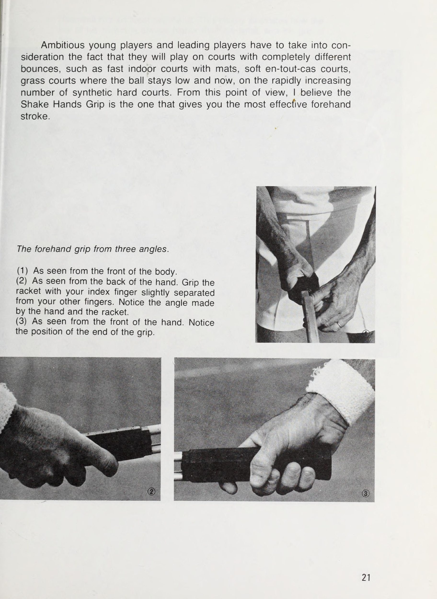
Cầm vợt bằng tay trái với tay cầm hướng về phía bạn, sao cho mép mặt vợt vuông góc với mặt đất. Bây giờ, đặt tay phải của bạn lên dây và không thay đổi góc của nó, trượt tay xuống cán vợt và nắm chắc vợt. Nói cách khác, bàn tay của bạn có hình dạng giống như khi bạn bắt tay. Chữ “V” được tạo bởi ngón cái và ngón trỏ của bạn phải gần như chính xác phía trên cán vợt.
Kiểu cầm vợt này là kiểu cầm vợt thuận tay được sử dụng phổ biến nhất. Gần đây, gần như
tất cả những người chơi hàng đầu đều đang sử dụng nó. Tôi tin rằng có rất nhiều người, nếu họ không sử dụng chính xác cách cầm này, thì sẽ sử dụng thứ gì đó tương tự. Tôi nên thích những người trẻ tuổi và những người lần đầu tiên chơi quần vợt thực sự nỗ lực sử dụng cách cầm vợt này. Nó có thể được sử dụng một cách thoải mái cho tất cả các cú đánh thuận tay, cho những cú đánh cao, những quả bóng trung bình và cả những cú đánh thấp. Nhiều người chơi ở các nơi khác trên thế giới, đặc biệt là Phương Đông, nắm tay họ xa hơn; nói cách khác, một kiểu cầm vợt gần với kiểu cầm vợt phương Tây hơn nhiều.
Có lẽ điều này bị ảnh hưởng bởi phong cách quần vợt mềm cũ được lưu truyền qua nhiều năm. Có những lúc cách cầm này sẽ phát huy tác dụng: đánh bóng mạnh và nhanh, đánh bóng nhẹ nhàng càng mạnh càng tốt và đánh bóng sâu, nhưng nhìn chung không thể đạt được kết quả thuận lợi với cách cầm này. Đây là cách cầm vợt cơ bản được sử dụng trong quần vợt đỉnh cao khi người chơi đánh bóng nhẹ nhàng trên sân chậm. Trong quần vợt ngày nay, nó được sử dụng trên tất cả các loại sân.
ent — ‘= wed ~ — Cho dù quần vợt của bạn có cải thiện đến đâu thì tầm quan trọng của cách cầm vợt không bao giờ thay đổi. Fletcher nhận được hướng dẫn về cách “tay cầm” từ Rosewall.
Các cầu thủ trẻ đầy tham vọng và các cầu thủ hàng đầu phải cân nhắc thực tế rằng họ sẽ thi đấu trên các sân có độ nảy hoàn toàn khác nhau, chẳng hạn như sân trong nhà nhanh có thảm, sân mềm, sân cỏ nơi bóng ở mức thấp và hiện nay, với số lượng sân cứng tổng hợp ngày càng tăng nhanh. Từ quan điểm này, tôi tin rằng Shake Hands Grip là cách mang lại cho bạn cú đánh thuận tay hiệu quả nhất. Cách cầm vợt thuận tay từ ba góc độ.
(1) Nhìn từ phía trước cơ thể. (2) Nhìn từ mu bàn tay. Cầm vợt bằng ngón trỏ cách xa các ngón còn lại một chút. Chú ý góc tạo bởi tay và vợt. (3) Nhìn từ phía trước bàn tay. Chú ý vị trí của phần cuối của tay cầm.
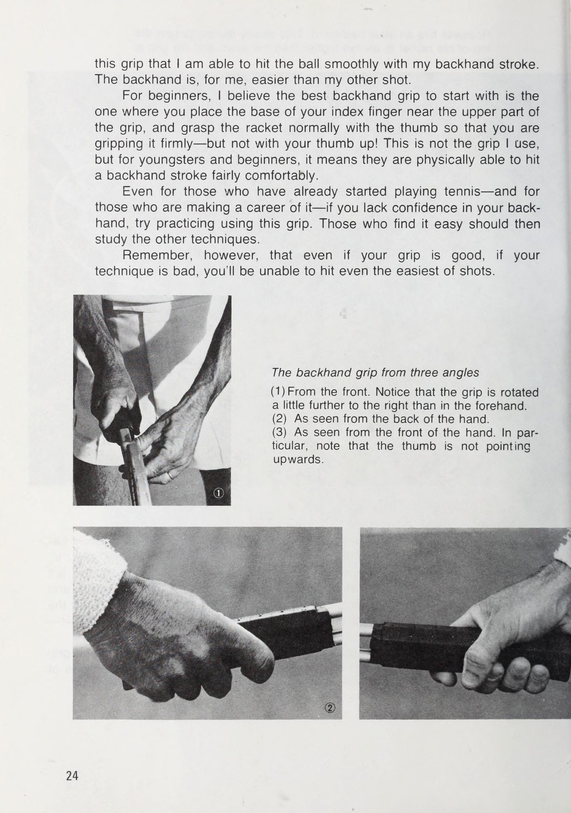
Borg đánh thuận tay bằng cách sử dụng cách cầm vợt sâu, chuyển sang cách cầm vợt nông cho các cú đánh khác. nhưng
Rosewall tung ra một cú đánh trái tay lý tưởng. Điều này minh họa rõ ràng việc đỉnh vợt của anh ấy luôn cao hơn cổ tay và tay cầm chắc chắn. Cách cầm vợt trái tay Đối với cách cầm vợt trái tay của tôi, vị trí trên vợt chỉ hơi xa về bên phải hơn so với cách cầm vợt thuận tay của tôi. Do đó, chữ “V” được tạo bởi ngón cái và ngón trỏ di chuyển nhẹ về phía tay trái. Nắm vợt chắc chắn nhưng không quá chặt bằng các ngón tay và đặt ngón cái quanh cán vợt.
Ngược lại với cách cầm vợt thuận tay, đối với cú đánh trái tay, bạn cần nắm vợt chắc chắn hơn một chút— và bạn phải giữ chắc cổ tay. Qua nhiều năm kinh nghiệm, | tôi nhận thấy cách cầm trái tay này là một cách cực kỳ tự nhiên đối với tôi, và ! có thể nói đó là vì
cái nắm này | tôi có thể đánh bóng mượt mà bằng cú đánh trái tay của mình. Đối với tôi, cú trái tay dễ dàng hơn cú đánh khác của tôi. Dành cho người mới bắt đầu, tôi tin rằng cách cầm vợt trái tay tốt nhất để bắt đầu là cách mà bạn đặt gốc ngón trỏ gần phần trên của tay cầm và nắm vợt bình thường bằng ngón cái để bạn nắm vợt chắc chắn—nhưng không phải với ngón tay cái hướng lên! Đây không phải là độ bám tôi sử dụng, nhưng đối với những người trẻ tuổi và người mới bắt đầu, điều đó có nghĩa là họ có thể đánh một cú đánh trái tay khá thoải mái.
Ngay cả đối với những người đã bắt đầu chơi quần vợt—và đối với những người đang theo đuổi sự nghiệp quần vợt—nếu bạn thiếu tự tin về cú đánh trái tay của mình, hãy thử luyện tập cách cầm vợt này. Những ai thấy dễ thì nên học các kỹ thuật khác. Tuy nhiên, hãy nhớ rằng ngay cả khi bạn cầm bóng tốt nhưng nếu kỹ thuật của bạn kém, bạn sẽ không thể thực hiện được ngay cả những cú đánh dễ dàng nhất. Cách cầm vợt trái tay từ ba góc (1) Từ phía trước. Lưu ý rằng tay cầm được xoay xa hơn một chút về bên phải so với bên thuận tay.
(2) Nhìn từ mu bàn tay. (3) Nhìn từ phía trước bàn tay. Đặc biệt, hãy lưu ý rằng ngón tay cái không hướng lên trên.
Tay cầm dịch vụ— Tay cầm cú vô-lê tôi sử dụng cách cầm trái tay khi tôi đang giao bóng và cũng để chơi cú vô-lê. Tuy nhiên, vì thể chất của mỗi người đều khác nhau, tôi nghĩ rằng sẽ cực kỳ khó để mọi người có thể sử dụng cách cầm giống hệt như tôi làm để giao bóng và chuyền bóng. Cách cầm vợt của bạn có ảnh hưởng lớn đến góc bạn có thể thực hiện bằng cổ tay. Tôi nghĩ rằng có lẽ tốt nhất là những người trẻ tuổi nên quyết định cách cầm vợt để giao bóng và chuyền bóng nằm ở đâu đó giữa cách cầm vợt thuận tay và trái tay tôi đã mô tả trước đó.
Đương nhiên, những ai cảm thấy sẽ muốn thử cách cầm giống như tôi sử dụng, nên tập luyện với điều đó. k Cách cầm trái tay cũng có thể là 2 ae he . hợp nhất để chuyền bóng. Khi thực hiện cú vol-: ley, điều đặc biệt quan trọng là giữ cho tay cầm chắc chắn và cổ tay ổn định. b
Thế đứng của bạn trong khi chờ nhận bóng phải tự nhiên để bạn có thể xử lý bất kỳ quả bóng nào ngay lập tức. Chúng ta nên tiến về phía trước.
Thế: Thế mở đầu và vai trò của con mắt
Trước khi đánh vào thế mở đầu—Sẵn sàng nhận bóng Là một môn thể thao, đánh bóng là tất cả những gì quần vợt hướng tới, nhưng việc chuẩn bị bản thân trước khi đánh bóng và trong khi chờ bóng là cực kỳ quan trọng. Điều này là do thế đứng của bạn cũng ảnh hưởng lớn đến hình thức mà bạn thực hiện cú đánh của mình. Lập trường mà bạn có khi sẵn sàng tiếp nhận là quan trọng nhất - và điều này phải tự nhiên nhất có thể. Không nên quá căng thẳng, hãy đứng hai chân cách nhau một khoảng thích hợp để có thể di chuyển nhanh về mọi hướng; tiến, lùi hoặc sang trái hoặc phải.
Việc giữ tư thế quá thấp hoặc đứng quá thẳng là điều không mong muốn. Giữ vợt của bạn ở phía trước nhưng không để vợt dốc xuống từ cổ tay. Tránh bị mỏi bằng cách cầm nhẹ vợt bằng tay phải và luôn đỡ phần giữa vợt bằng tay trái. Nói tóm lại, với tư thế này, bạn sẵn sàng phản ứng ngay lập tức với bất kỳ loại bóng nào lao tới bạn.
Chờ với vợt ở phía trước giữa cơ thể, hướng thẳng vào đối thủ. Vai trò của đôi mắt rất quan trọng Cần phải theo dõi bóng thật kỹ trong mỗi cú đánh, để nhanh chóng đánh giá xem bóng của đối thủ đã được đánh như thế nào, nó đến với bạn như thế nào và trên cơ sở đó, bạn sẽ thực hiện bước đi tiếp theo. Khi bạn đã chơi quần vợt trong một thời gian dài, nó sẽ trở nên
có thể rời mắt khỏi bóng mà vẫn có thể đánh được. Một lần nữa, bạn có thể sẽ phát triển khả năng dự đoán nước đi của đối thủ. Tuy nhiên, để có được những cú đánh thực sự tốt, bạn nên cố gắng để mắt tới quả bóng càng lâu càng tốt, cho đến khi nó thực sự chạm dây. Tôi có đôi mắt tinh tường và cố gắng không rời mắt khỏi quả bóng càng nhiều càng tốt. Không thể nghi ngờ rằng đây là một lợi thế lớn khi chơi quần vợt.
Cho dù bạn có phải di chuyển bao nhiêu đi chăng nữa, đừng bao giờ rời mắt khỏi Dall.
Luôn nhớ theo dõi cẩn thận chuyển động của cả đối thủ. Pe ‘ i a oi * - 5 hướng bóng và
Hãy cố gắng không bao giờ rời mắt khỏi quả bóng, cho đến thời điểm bạn đánh nó.
Động tác chân: Sự quen thuộc và tính di động của sân đấu
Động tác bằng chân—Cơ sở của việc chơi tốt Hãy làm quen với sân của bạn Quần vợt là môn thể thao mà trong hầu hết thời gian, bạn sẽ di chuyển quanh sân. Cho dù bạn đánh bóng khéo léo đến đâu, nếu bạn di chuyển quá chậm hoặc nếu bạn thiếu sức chịu đựng thì không có cách nào bạn có thể giành chiến thắng trong trò chơi. Nhưng chỉ đơn giản là nhanh chân và có sức bền vẫn chưa đủ. Tất cả các động tác bằng chân đều có mối liên hệ quan trọng với việc ổn định phong độ của cầu thủ. Nếu bạn nhìn vào phong độ của những cầu thủ đẳng cấp nhất, lối chơi của họ dường như luôn ổn định, bởi vì họ luôn chú ý cẩn thận đến động tác bằng chân và giữ khoảng cách cần thiết giữa hai chân.
Hãy quan sát kỹ cách họ đuổi theo quả bóng. Cầu thủ càng có kỹ năng tốt thì chân của mình càng tạo ra ít tiếng ồn trên sân và số lần trượt trên sân càng ít. Bề mặt sân tennis có thể là cỏ, hoặc có thể là sân cứng, nhựa đường, cao su hoặc thảm. Mỗi người đều có những đặc thù riêng. Trong số đó, có một điều là không thể trượt trên sân nhựa và sân trải thảm, nên dù bước đi của bạn có nhỏ đến đâu thì động tác chân của bạn sẽ luôn bị cản trở.
sao cho chân bạn có thể nổi lên. Với sân cỏ, nếu chỉ hơi ẩm thì rất dễ trượt, nhưng trong trường hợp đó hãy cố gắng trượt nhiều hơn bằng lòng bàn chân. Trượt trên sân đất nện là dễ dàng nhất, đặc biệt là trong trường hợp trượt kiểu en-tout-cas, vì việc thực hiện động tác bằng chân hoàn hảo sẽ trở nên khó khăn. Rosewall hiển thị bước chân lý tưởng và thời gian di chuyển.
Động tác bằng chân được thấy ở những cầu thủ đẳng cấp nhất Nếu bạn luôn chơi trên sân cỏ, bạn sẽ di chuyển bằng ngón chân. Nếu ngón chân của bạn là bộ phận đầu tiên tiếp xúc với mặt đất khi bạn chơi trên cỏ thì bạn sẽ bị đẩy về phía trước. Theo thói quen, những cầu thủ như vậy thi đấu trên sân cứng sử dụng cùng một kiểu di chuyển. Ở Phương Đông và Châu Âu, nơi sân đất nện và đất chiếm ưu thế, bạn có thể thấy hầu hết các cầu thủ đều trượt khi họ đang thi đấu. Tôi nghĩ rằng đây là lý do tại sao họ cảm thấy khó khăn trong việc luyện tập động tác chân đúng.
Khi họ chơi trên sân cỏ lần đầu tiên hoặc trên sân mà họ không thể trượt, họ gặp rất nhiều khó khăn. Điều chỉnh là cần thiết. Cố gắng không trượt quá nhiều ngay cả trên các loại sân có bố cục; thay vào đó, hãy thực sự cố gắng tập thói quen sử dụng động tác bằng chân thích hợp.
RO a oal : ge ? s ie Ps a, oe # Br ie ” ‘ > Rosewall chơi một cú thuận tay đẹp và cân đối. Bí quyết về sức mạnh của Rosewall là động tác chân chính xác và luôn giữ vững nửa thân trên của mình.
Phần 2: Tuyệt Kỹ Đánh Bóng Cuối Sân: Forehand Vững Chắc & Backhand Slice Huyền Thoại
Các cú chạm đất: Thực hiện cú đánh thuận tay
Các kiểu đánh bóng trên mặt đất Với các cú đánh chạm đất, có ba kiểu trả bóng mà bạn có thể thực hiện, tùy thuộc vào độ xoáy của bóng. Có cú xoáy từ trên xuống, nơi bạn thực hiện một cú xoáy về phía trước đối với quả bóng; cú cắt, nơi bạn thực hiện một cú xoay ngược về phía quả bóng; và cú đánh phẳng, khi bạn đánh bóng, mép vợt của bạn vuông góc với mặt đất. Mặc dù nó được gọi là một cú đánh phẳng, nhưng bạn có thể tạo một cú xoáy vào bóng bằng cách theo bóng hoặc bằng góc vợt thích hợp, nhưng đây không phải là những quả bóng mà bạn cố ý thêm độ xoáy vào.
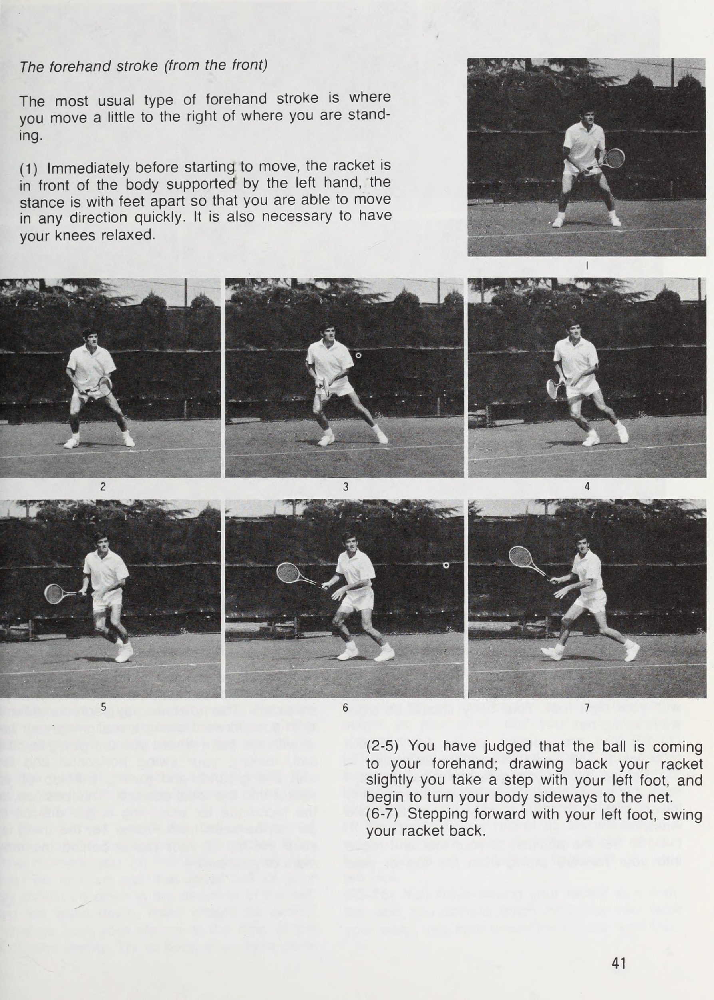
Đối với cú thuận tay của tôi, tôi đánh bóng bằng một cú đánh fiat để độ xoáy trên cùng được thêm vào nó trong lượt tiếp theo. Đối với trái tay của tôi, tôi hầu như luôn đánh bằng một lát. Tôi không bao giờ sử dụng độ xoáy cực cao khi đánh thuận tay hoặc trái tay. Cú đánh thuận tay Cú đánh thuận tay của tôi lần đầu tiên được dạy cho tôi bởi cha tôi, người đã học nó bằng cách đọc sách về quần vợt và nghiên cứu quần vợt của những tay vợt giỏi nhất thời đó - những năm 1930. Quần vợt lúc đó khác với quần vợt 10-15 vừa qua 3/
Đánh bóng thuận tay bằng mặt vợt. Cú cắt trái tay tạo ra một đường bóng đánh mạnh.
năm. Tốc độ không nhanh như ngày nay và trận đấu chậm hơn một chút, SO những cú chạm đất quan trọng hơn nhiều. Để đạt được khả năng kiểm soát tốt và cũng có thể đánh bóng sâu, bạn cần phải thực hiện một cú vung vợt dài. Khi nào tôi xem lại những bộ phim cũ của mình, tôi có thể thấy rõ rằng từ khi vung vợt ra sau cho đến những cú đánh theo sau, cú thuận tay cũ của tôi là một cú đánh lớn và dài. Điều này là do, để thực hiện cảnh quay, tôi kéo vợt của tôi lùi hẳn về phía sau rồi hạ xuống để đánh bóng.
Điều này không quá tệ khi tôi là một cầu thủ trẻ. Trên thực tế, nó đã rất thành công vào thời điểm đó. Tuy nhiên, cả thời gian và trò chơi đều diễn ra nhanh chóng — đặc biệt là sau tôi chuyển sang chuyên nghiệp vào năm 1957. Khi nào tôi bắt đầu chơi trên sân trong nhà nơi tốc độ bóng nhanh hơn, việc kiểm soát những cú thuận tay của tôi trở nên rất khó khăn. Tôi đã phải làm việc chăm chỉ để rút ngắn cú đánh của tôi. Tôi kéo vợt của tôi thẳng về phía sau sao cho nó gần như nằm ngang với mặt đất, rồi đưa thẳng về phía trước.
tôi nhận thấy rằng, đối với tôi, điều này mang lại kết quả thuận lợi nhất. Tôi không muộn khi bóng đi nhanh và mặt khác tôi có thể đánh bóng chính xác, đúng thời điểm, ngay cả trên sân chậm. Tuy nhiên, tôi tìm tôi có rất nhiều vấn đề với cú thuận tay của tôi ngay cả bây giờ. Điều này là do, trái ngược với cú đánh trái tay, cú đánh thuận tay không có hình thức xoay người tự nhiên. Mặc dù mọi người coi tôi là một trong những người chơi hàng đầu, tôi luôn nhớ rằng điều quan trọng đối với tôi là sửa chữa những thiếu sót trong trò chơi của mình.
Cho dù bạn là người mới bắt đầu hay một vận động viên Davis Cup, nếu bạn cho rằng kỹ thuật của mình không đúng thì bạn phải làm mọi cách có thể để sửa nó. Điều này thực sự cần thiết nếu bạn muốn cải thiện khả năng chơi tennis của mình. Đối với một người như tôi, rất khó để sửa một điều gì đó mà bạn đã làm trong nhiều năm, nhưng niềm hy vọng ấp ủ từ lâu của tôi là đưa cú thuận tay của tôi đến gần hơn, dù ít đến đâu, một cú vung vợt tự nhiên. Một khi bạn thấy bóng của đối thủ đang đến phía thuận tay của bạn, hãy phán đoán vị trí nơi nó sẽ rơi xuống và di chuyển đến đó càng nhanh càng tốt.
Sẽ có lúc bạn phải chạy hai hoặc ba bước, và có thể có những lúc bóng tiếp đất đúng nơi bạn đang đứng. Điều quan trọng là luôn ở vị trí nhận bóng mà bạn có thể đánh nó tốt nhất. Nói thì dễ, nhưng trên thực tế, ngay cả những người được gọi là người chơi hàng đầu trong chúng ta cũng thấy việc hoàn thiện là vô cùng khó khăn. Có thể di chuyển nhanh đến vị trí bóng bất cứ lúc nào là bước khởi đầu quan trọng để thực hiện một cú đánh tự nhiên, không bị gò bó.
Bạn không nên ở quá gần hoặc quá xa bóng. Di chuyển mình vào vị trí dễ dàng để đánh nó.
Cú đánh thuận tay (từ phía trước) 4 , Tai Kiểu đánh thuận tay thông thường nhất là khi bạn di chuyển một chút sang bên phải nơi bạn đang đứng. (1) Ngay trước khi bắt đầu di chuyển, vợt ở phía trước cơ thể được đỡ bởi tay trái, tư thế hai chân dang rộng để bạn có thể di chuyển nhanh chóng theo bất kỳ hướng nào. Đầu gối của bạn cũng cần được thư giãn. (2-5) Bạn đã đánh giá rằng bóng đang đến phía thuận tay của bạn; Hơi rút vợt về phía sau, bạn bước một bước bằng chân trái và bắt đầu xoay người sang ngang về phía lưới.
(6-7) Bước chân trái về phía trước, vung vợt về phía sau. 4]
(8-10) Bạn đã đánh giá được độ sâu và đường đi của bóng, vì vậy hãy bắt đầu bước về phía bóng bằng chân phải. Cơ thể của bạn phải nghiêng về phía lưới. (11-13) Bạn đang tiến tới đỉnh của cú vung vợt sau. Vợt thẳng như trong hình này, nhưng dành cho người trẻ và người mới bắt đầu, tôi nghĩ rằng sẽ tốt hơn nếu đỉnh vợt thấp hơn một chút: nghĩa là cao hơn cổ tay một chút. (14-16) Đặt vị trí của bàn chân của bạn và thực hiện cú đánh về phía trước từ đỉnh của cú đánh lùi.
Ở đỉnh của cú đánh sau, vợt của bạn phải ngang tầm với vai của bạn. Những điểm cần đặc biệt chú ý trong cú vung vợt về phía trước của bạn là căn chỉnh vợt của bạn với điểm mà bạn sắp đánh bóng, làm cho cú vung vợt của bạn nằm ngang và ngang bằng với mặt đất, đồng thời đưa đầu vợt của bạn vào vị trí lý tưởng. Vị trí này và kỹ thuật để đạt được nó rất khó nhưng, như có thể thấy từ Khung 16, vấn đề là phải giữ đầu vợt phía sau chuyển động của cánh tay bạn.
"23 | 24 17) Vặn vai mà không vặn núm trong khi vung cánh tay về phía trước. Đồng thời cẩn thận để đầu vợt ở nguyên vị trí nhưng phải xoay đầu cán vợt về phía trước. 18) Đầu vợt phải vung về phía trước- Nard đột ngột khi cánh tay duỗi thẳng và cầm chắc chắn. 19) Thời điểm bóng được nhận vuông góc ngay chính giữa mặt vợt. Tại thời điểm bạn đánh bóng, bàn chân trái của bạn phải ở phía trước và nửa thân trên của bạn phải mở về hướng lưới.
Từ thắt lưng trở xuống, tư thế của bạn hầu như không có sự thay đổi tại thời điểm cú vung của bạn nghiêng. Cố gắng tập trung hoàn toàn vào quả bóng. Tư thế đứng lý tưởng có lẽ là đầu vợt ở độ cao tương đương với cổ tay của bạn và cánh tay của bạn duỗi thẳng ra. (20-22) Từ cú va chạm đến cú theo sau, vặn người từ thắt lưng, vợt của bạn theo sau quả bóng và thực hiện một cú vung dài rộng về phía trước. Sau khi đánh bóng, đừng nhấc đầu vợt lên ngay mà hãy xoay người một cách tự nhiên.
Trọng lượng cơ thể của bạn phải hoàn toàn được dồn vào chân trái. (23-25) Bạn đã vung vợt theo hình vòng cung rộng và bạn nên kết thúc ở vị trí cao. Khi bạn vặn eo, bạn bước về phía trước bằng chân phải.
Aa (26-28) Xoay vợt của bạn một vòng, với vai phải của bạn hướng về phía trước cằm. Xác nhận hướng chuyển động của quả bóng bằng mắt. (29-32) Điều cực kỳ quan trọng là chuyển từ kết thúc sang động tác tiếp theo của bạn. Tay trái của bạn lại đỡ vợt và bạn di chuyển nhanh chóng về giữa sân để sẵn sàng nhận quả bóng tiếp theo. Lưu ý Việc sử dụng cổ tay ở hình 17-18 không nên được thực hiện một cách có ý thức trong giai đoạn đầu.
Khi bạn đã quen và khi đã học được động tác này, bạn sẽ có thể trả lại tất cả các loại bóng một cách hiệu quả và chính xác.
Đỉnh của động tác vung vợt sau dừng lại ở một điểm thẳng hàng với vai của bạn, để bạn có thể vung về phía trước ở cùng độ cao với bóng.
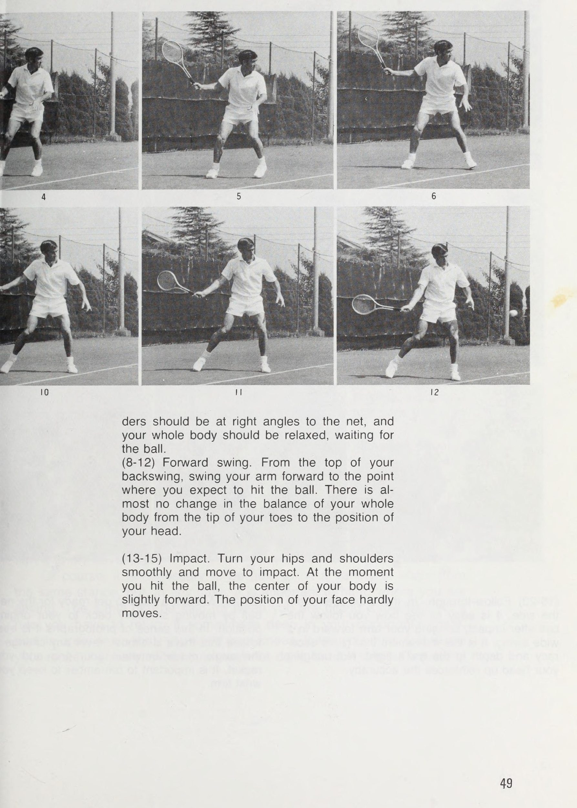
Có ba giai đoạn trong quá trình vung vợt. Đó là: hành động kéo vợt về phía sau, tức là vung vợt ra sau; hành động từ cú vung vợt về phía trước cho đến thời điểm tiếp xúc với bóng, tức là khi bạn trả vợt lại để gặp bóng; và phần tiếp theo, nơi bạn theo dõi đường đi của quả bóng về phía trước. Bắt đầu động tác vung vợt sau ngay khi bạn di chuyển về phía bóng. Đối với cú đánh thuận tay, nguyên tắc là cơ thể bạn phải quay sang một bên về phía lưới.
Cố gắng đạt được trạng thái hai chân cách nhau đúng khoảng cách, giữ vững hông, đảm bảo cơ thể không căng thẳng một cách không cần thiết và giữ thăng bằng tự nhiên nhất có thể. Từ vị trí đỡ vợt nhẹ bằng tay trái, đưa vợt về phía sau mà không thay đổi góc vợt, dùng vai làm trục. Lúc này, bạn không nên duỗi thẳng khuỷu tay một cách không cần thiết hoặc dùng cổ tay để đổi hướng mà vợt đang hướng tới.
Điều quan trọng là chuyển động của cơ thể bạn phải diễn ra tự nhiên xuyên suốt. Theo nguyên tắc, phạm vi của động tác backswing không được lùi xa hơn đường vai của bạn. Nếu bạn lùi quá xa, bạn sẽ không thể đánh bóng chính xác và sẽ khiến bạn đưa cánh tay về phía trước chậm. Cách đưa cánh tay của bạn trở lại để đánh bóng là bắt đầu từ một điểm có cùng độ cao với quả bóng mà bạn đang cố đánh, sau đó giữ cho cú vung của bạn ở mức song song với mặt đất càng nhiều càng tốt.
Tại thời điểm này, hãy cẩn thận đừng để đầu vợt của bạn thấp hơn cổ tay của bạn. Những điểm này rất quan trọng nếu bạn muốn đánh bóng chính xác và tốt. Khi bạn chuẩn bị tiếp xúc với bóng, hãy cố gắng đẩy cơ thể về phía trước theo hướng bạn định đánh bóng, sau đó thực hiện theo, đưa vợt về phía trước đến điểm mà bạn dồn trọng lượng lên bàn chân trái phía trước. Điểm tiếp xúc với quả bóng trước đây thẳng hàng với tâm của cơ thể, nhưng ngày nay nó hơi xa về phía trước; tức là bạn đánh bóng bằng nửa người bên trái hơi hướng về phía trước.
Điều này là do, ở vị trí này, bạn có thể thực hiện cú tấn công tốt hơn. Ngược lại với cú vung về phía sau, mục đích của cú vung về phía trước là để đánh bóng. Khi thực hiện, bạn nên duỗi tay, cầm vợt thật chắc và đánh bóng, sau đó, tại thời điểm đó, giữ khuỷu tay của bạn thẳng nhất có thể và hoàn thành động tác tiếp theo của bạn.
Giữ cổ tay chắc chắn cho cú thuận tay, duỗi khuỷu tay ra một cách tự nhiên và vung vợt. Đừng bao giờ quên giữ thăng bằng bằng cách sử dụng tay trái. Chú ý bóng và bề mặt vợt có cùng độ cao.
Đây là cú đánh thuận tay nhìn từ bên cạnh, cho thấy động tác bằng chân bao gồm hai bước, với cả hai bàn chân gần như vuông góc với lưới. (1-7) Xoay người ra sau. Đặt chân tùy theo quỹ đạo của bóng và kéo vợt về phía sau. Ở đỉnh của cú backswing, cả hai đều phải-
ders phải vuông góc với lưới và toàn bộ cơ thể của bạn phải thư giãn, chờ bóng. (8-12) Xoay về phía trước. Từ đỉnh của cú backswing, vung cánh tay của bạn về phía trước đến điểm mà bạn dự kiến sẽ đánh bóng. Hầu như không có sự thay đổi nào trong sự cân bằng của toàn bộ cơ thể bạn từ đầu ngón chân đến vị trí đầu. (13-15) Sự va chạm. Xoay hông và vai nhẹ nhàng và di chuyển để tác động. Tại thời điểm bạn đánh bóng, trọng tâm của cơ thể bạn hơi hướng về phía trước.
Vị trí khuôn mặt của bạn hầu như không di chuyển.
(16-20) Theo dõi. Trong cú đánh nhìn từ bên cạnh, có thể dễ dàng nhận thấy cách bạn theo bóng sau khi va chạm, đưa cánh tay của bạn về phía trước trong một cú xoay rộng. Chính chuyển động này mang lại độ chính xác và chiều sâu cho đường bay của quả bóng. Không ngẩng đầu lên sẽ củng cố tính chính xác. (21-24) Hãy tạo thói quen sẵn sàng cho quả bóng tiếp theo bằng cách di chuyển nhẹ nhàng trở lại vị trí ban đầu. Trong loạt ảnh này, có thể dễ dàng nhận thấy rằng hầu như không bao giờ có bất kỳ thay đổi nào về góc giữa tay cầm và vợt của bạn.
Điều quan trọng là phải nhớ giữ vững cổ tay.
Trong lượt theo dõi của bạn, hãy cẩn thận về đích ở điểm cao hơn điểm mà bạn tiếp xúc với bóng. Một pha theo bóng tốt không chỉ mang lại cho quả bóng một quỹ đạo chính xác mà còn mang lại cho nó đủ độ sâu. Khi bạn có thể thực hiện cú xoay cơ bản, bạn sẽ có thể hướng bóng đến bất kỳ điểm nào bạn muốn đánh. Trong quần vợt, việc đánh bóng nhanh hay đánh xa không quan trọng. Đây là một trận đấu mà điều quan trọng nhất là vị trí đặt bóng.
Biểu mẫu chính xác cho phép bạn thực hiện việc này. | tôi không hài lòng với một số khía cạnh nhất định của cú thuận tay của tôi. Tôi vẫn chưa hoàn thiện sự cân bằng của mình và tôi cơ thể tôi không xoay đủ ngang vào lưới. Mặc dù bạn có thể trả bóng khi khả năng giữ thăng bằng của bạn không tốt ở phần sân đối phương, nhưng nó sẽ không có lực khi cơ thể bạn không nghiêng về phía lưới. Nói cách khác, một quả bóng mà bạn đánh với tư thế cởi mở, hướng vào lưới, chỉ có sức mạnh của cổ tay bạn đằng sau nó chứ không phải sức mạnh của toàn bộ cơ thể bạn.
Ngay cả cú đánh tiếp theo cực kỳ quan trọng cũng không đủ tốt trong cú thuận tay của tôi. Kết quả là, tôi không có toàn quyền kiểm soát và đôi khi không thực hiện chính xác những gì tôi có ý định làm. Những cú đánh của John Newcombe và Mal Anderson luôn tuyệt vời, và trong số những cú đánh này, những cú thuận tay của họ đặc biệt xuất sắc. Đương nhiên, điều này xảy ra khi bóng bay đến vị trí của họ, nhưng ngay cả khi họ phải chạy để thực hiện cú sút, họ vẫn có một kỹ thuật kết hợp giữa tính thời gian chuẩn xác và khả năng đánh bóng với lực phù hợp.
Khi đối thủ của bạn thực hiện một cú xoáy thực sự vào quả bóng, quả bóng đó sẽ nảy lên cao, cũng như có độ xoáy rõ rệt và do đó rất khó để đánh trả. Khi nào tôi trả lại loại bóng này, tôi hãy cẩn thận để xem quả bóng đó tôi cú đánh không thể biến thành lợi thế của đối thủ. Tôi trả bóng khi nó vẫn còn ở trên cao, và ở vị trí đó hãy cắt vợt của tôi về phía sau, giữ cho nó nằm ngang với mặt đất. Điều này có nghĩa là trong khi | tôi không thể trả lại nhanh được, | tôi có thể trả nó lại ở đâu đó sâu trong phần sân của đối thủ và do đó biến nó thành lợi thế của tôi.
Tất nhiên, cần phải có khả năng tung ra nhiều cú đánh khác nhau từ cùng một tư thế, nhưng, trong mọi trường hợp, điều quan trọng là phải bắn trúng nơi bạn đang nhắm tới. Điều tương tự cũng có thể xảy ra khi bạn đánh một quả bóng thấp. Theo quy định, bạn phải trả bóng ở vị trí nào đó sâu trong phần sân đối phương và để làm được điều đó, bạn phải uốn cong đầu gối, hạ thấp hông và vung vợt bình thường. Điều bạn không được làm là đánh nó mà không ngồi xổm
hơi với điểm vợt của bạn ở mức thấp. Nhiều người trẻ và người mới bắt đầu mắc lỗi này khi đánh kiểu đánh này. Họ đánh bóng thấp mà không hạ thấp hông, chỉ đứng bình thường và điểm vợt thấp. Không có sức mạnh cho quả bóng. Hơn nữa, họ không thể đánh nó ở góc độ cần thiết. Đối với một quả bóng thấp bạn nhận được ở gần đường biên ngang, bạn nên uốn cong đầu gối và đánh nó, thường là nhằm mục đích đưa bóng đi cao hơn.
Khi bạn đánh trả một quả bóng ngắn từ gần đường giao bóng, bạn phải thực hiện cú đánh của mình vì thực tế là bạn phải đưa nó qua lưới ngay trước mặt bạn và khoảng cách đến đường cuối sân của đối thủ là ngắn. Hãy giữ bình tĩnh, để mắt đến quả bóng và thực hiện cú vung vợt của bạn, luôn lưu ý đến độ cao của lưới. Ngoài ra, điều quan trọng là phải nhận thức được hiệu quả của cú xoáy được tạo ra cho quả bóng khi bạn thực hiện động tác theo bóng. Rất nhiều cầu thủ hàng đầu trả bóng thậm chí ngắn, thấp như thế này vào sâu phần sân đối phương bằng cách sử dụng đúng hình thức.
Việc có mặt trên lưới là một lợi thế của họ. Tôi kêu gọi mọi người luyện tập để có thể đánh tốt những cú đánh thấp này.
Những cú chạm đất: Cú đánh trái tay huyền thoại
BRAM BS 8 te Re rt A ge marae me Khi trả giao bóng hoặc một quả bóng đánh mạnh, điều quan trọng là cơ thể bạn phải nghiêng sang một bên về phía lưới. Để thực hiện cú đánh tiếp theo, hãy theo sau quả bóng và vung vợt của bạn càng xa về phía trước càng tốt. Đồng thời, cố gắng giữ khuỷu tay phải càng thẳng càng tốt.
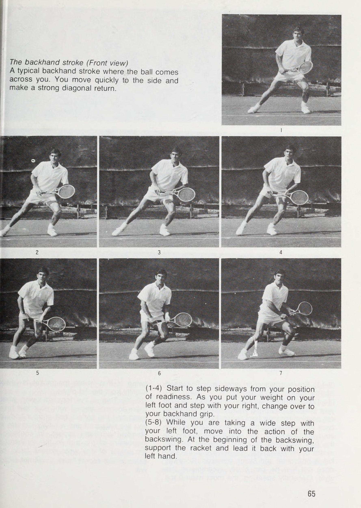
Newcombe, được thấy ở đây khi thực hiện cú đánh thuận tay rất mạnh từ một tư thế giữ thăng bằng, vung vợt theo chiều ngang và cố gắng đánh bóng phẳng.
Khi đánh một quả bóng có độ nảy cao, bạn cũng nên thực hiện một cú vung vợt về phía sau cao. Đối với bóng thấp, bạn nên hạ thấp vị trí cổ tay nhưng lưu ý không để mặt vợt dốc xuống.
Cú đánh trái tay của Rosewall đã trở thành thương hiệu của anh ấy. Ở đây, anh ta được cho thấy đang sẵn sàng đánh một trong những quả bóng có độ nảy thấp đặc trưng của sân cỏ. Sử dụng tư thế thăng bằng, gập đầu gối, anh ta chuẩn bị đánh bóng bằng một lát.
Cú đánh trái tay Về cơ bản, bạn có thể nói rằng cú đánh trái tay hoàn toàn giống với cú đánh thuận tay. Vì cú đánh trái tay sử dụng các chuyển động của cơ thể và cánh tay không được sử dụng nhiều trong hoạt động hàng ngày nên ban đầu nó có thể được coi là khó khăn. So với cú thuận tay, do vai phải, là điểm chính, được đưa về phía trước nên phạm vi vị trí mà bạn đánh bóng tương đối hẹp. Vì vậy, trái ngược với suy nghĩ thông thường, có thể coi việc thực hiện điều này đúng dễ dàng hơn so với cú thuận tay.
Trong một thời gian dài, người ta tin rằng thuận tay trái là điểm yếu của những người chơi thuận tay trái, nhưng, như đã thấy với cả Rod Laver và Tony Roche, ngay cả những người chơi thuận tay trái với cú trái tay rất mạnh cũng đã trở nên đông đảo. Jimmy Connors, người cũng thuận tay trái và đánh trái tay bằng hai tay, có thể tung ra những cú đánh sâu tuyệt vời. Ngày nay, số lượng người chơi có thể nói là có trái tay yếu là cực kỳ hạn chế. Có lẽ chúng ta có thể nói rằng những người chơi thuận tay trái đã có được những cú đánh trái tay mạnh mẽ bởi vì sự tiến bộ trong kỹ thuật quần vợt đã theo kịp thời đại.
Gần đây, số lượng người chơi sử dụng cú đánh trái tay hai tay đã trở nên rất lớn, nhưng nếu có một số người trong số các bạn đang dự định sử dụng hai tay, thì bạn phải nỗ lực cải thiện cú đánh này không chỉ như một cú đánh phòng thủ hữu ích mà còn như một vũ khí tấn công mạnh nhất của bạn. Vì bạn cầm vợt bằng cả hai tay nên bạn sẽ mất đi tính hiệu quả trong tầm với của mình và vì khi đó bạn phải bao quát sân nhiều hơn nên bạn phải rèn luyện bản thân để chạy nhanh hơn hoặc phản ứng nhanh hơn.
Với cú đánh trái tay, cũng như cú đánh thuận tay, khi bạn đã nhận định rằng bóng sẽ đến phía trái tay của mình, hãy nhanh chóng chạm bóng. Đừng bắt đầu động tác vung vợt về phía sau bằng tay phải, tay bạn đang cầm vợt. Bắt đầu kéo nó về phía sau bằng cánh tay trái của bạn. Điều này có nghĩa là, theo quy luật, bàn chân phải của bạn hướng về phía trước và cơ thể của bạn nghiêng sang lưới. Khi bạn thực hiện động tác backswing, tư thế của bạn là sao cho lưng của bạn gần như hướng về phía đối thủ.
Điều này là do, hoàn toàn trái ngược với cú đánh thuận tay, vai phải, vốn là tâm điểm của bạn, hướng về phía trước nhiều hơn so với tâm cơ thể. Cánh tay phải và cơ thể của bạn quay lại với nhau trong động tác xoay người về phía sau và eo của bạn bị vặn mạnh. Khi thực hiện động tác backswing tối đa, cằm của bạn phải chính xác qua vai phải.
Một vị trí cân bằng, chờ đánh bóng chính xác vào vị trí đã nhắm. Hãy nhớ rằng với cú trái tay, tay trái đóng vai trò quan trọng trong cú backswing. Mọi người đều biết tay trái đóng vai trò cực kỳ quan trọng trong quần vợt theo quan điểm của những người chơi thuận tay phải. Tất nhiên, điều ngược lại cũng đúng với những người thuận tay trái. Bằng cách đỡ vợt bằng tay trái trong khi chờ bóng, bạn có thể nghỉ ngơi mà không bị mỏi tay phải.
Điều này giúp bạn tránh phải cầm vợt liên tục, đồng thời giảm bớt cảm giác áp lực và mỏi ở tay phải, vốn là tay bạn hay sử dụng nhất. Điều này giúp bạn có thể chơi trong thời gian dài cùng một lúc. Đối với những bạn thiếu ổn định trong cú đánh trái tay, khi kéo vợt về phía sau, hãy cố gắng để bề mặt vợt ở cùng góc với thời điểm va chạm thực tế, đỡ vợt bằng tay trái. Để đánh trái tay nhanh chóng, hãy tạo thói quen vô thức là luôn sử dụng tay trái.
Trong động tác vung vợt về phía sau cho cú đánh trái tay, tay trái đỡ vợt và hướng dẫn vợt quay trở lại đỉnh của cú xoay. Laver chơi một cú đánh trái tay mạnh mẽ.
Với cú vung trái tay, cũng như cú thuận tay, điều cần thiết là bạn phải thực hiện nó một cách tự nhiên và trôi chảy. Đừng quên vung vợt song song với mặt đất. Ngay cả một số cầu thủ hàng đầu cũng không thể làm được điều này một cách hoàn hảo, nhưng nó là cần thiết nếu bạn muốn đánh một quả bóng tốt. Dành cho những người muốn cải thiện các cú đánh trái tay của trẻ, tôi nghĩ rằng tốt nhất là dạy họ hạ thấp cú vung về phía sau của họ một chút, đánh bóng phẳng và sau đó đưa cú đánh tiếp theo của họ lên cao hơn.
Như tôi đã nói trong phần “The Grip”, hãy giữ vợt chắc chắn, giữ cố định cổ tay từ đỉnh của cú xoay, căn chỉnh nó theo chiều cao của quả bóng và thực hiện cú vung về phía trước của bạn song song với mặt đất. Tại thời điểm bạn đánh bóng, hãy chuyển trọng lượng của bạn lên chân phải về phía trước và theo dõi đường bay của quả bóng bằng vợt. Sau đó, giơ tay phải lên, thực hiện một động tác lớn và kết thúc. Nếu bạn giữ vững cổ tay đến phút cuối cùng và không uốn cong khuỷu tay sau khi đánh bóng, bạn sẽ có thể thực hiện một cú dứt điểm tốt.
Vấn đề mà hầu hết mọi người gặp phải khi chơi trái tay là họ không giữ vững cổ tay. Đây là lý do tại sao khả năng di chuyển của họ không đồng đều và tại sao quả bóng sẽ không đi đến nơi họ muốn. Với những cú đánh trái tay của tôi tôi cố gắng đặc biệt để giữ cho cổ tay của tôi vững chắc, vung vợt theo chiều ngang và làm cho cú đánh của tôi trôi chảy. Các quy tắc này hoàn toàn giống nhau, ngay cả đối với việc đánh những quả bóng có độ nảy cao hơn mức trung bình, nhưng một khi bạn nhận ra rằng bạn sẽ phải đánh một quả bóng có độ nảy cao, hãy kéo động tác vung vợt về sau của bạn cao hơn và vung vợt về phía sau bằng cách căn chỉnh bề mặt vợt với độ cao mà bạn đánh bóng.
Khả năng giữ thăng bằng, tiếp xúc với bóng và theo bóng đều giống như bóng bình thường, nhưng khi đánh bằng một lát, bạn nên kết thúc bằng vợt ở vị trí cao. : Xét về mặt kỹ thuật, cú đánh trái tay cao là một cú đánh rất khó và tôi cảm thấy rằng việc sử dụng các loại kỹ thuật khác nhau cho nó là vô ích. Đầu tiên, hãy có một cú xoay dễ dàng phù hợp với bạn, sau đó nghĩ đến việc đánh bóng một cách chính xác và nơi bạn muốn nó đi.
Trong các trận đấu thực tế, có rất nhiều pha bóng cao khó mà bạn sẽ phải chơi. Tôi thích ứng với cách tôi chơi trái tay cao tùy theo đặc thù của sân, tình trạng trận đấu và vị trí bóng nảy. Nếu đó là một quả bóng sâu chạm gần đến vạch cuối sân thì đương nhiên tôi phải đánh bóng vào sâu phần sân đối phương nhất có thể. Vậy tôi đánh nó bằng một cú đánh mạnh mẽ, quyết tâm và sau đó tiếp theo bằng một cú Swing thực sự mạnh mẽ.
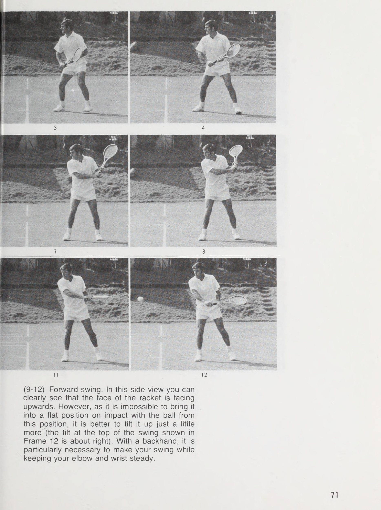
is ¥ “ : bes matte. ‘e . : * gs Ss! * Sy eq, e~k, - = # an ee ile nhạt, See Pe §eee eee et 4 a i nt : i > cok & Một cú trả bóng trái tay ngắn về phía đối thủ đang ở gần lưới. Anh ta chuẩn bị tư thế sẵn sàng cho quả bóng tiếp theo. Hành động nhanh chóng này là sở trường của Rosewall.
Thế đứng ở đỉnh của cú đánh sau tay, khi cằm vượt qua vai phải.
Cú đánh trái tay được thực hiện bằng cách sử dụng bề mặt phẳng. Connors là một trong những cầu thủ có cú trái tay bằng hai tay rất mạnh.
Khi bóng tiếp đất trong khu vực của đường giao bóng, tôi chạy nhanh như tôi có thể chạm vào quả bóng và đánh nó khi nó đang nảy lên hoặc trong khi nó vẫn đang bay lên. Nếu không thì tôi chơi nó khi quả bóng đã đạt đến đỉnh độ nảy của nó. Thành công của những cú đánh này nằm ở việc quan sát bóng cẩn thận và phối hợp thời gian một cách khéo léo. Trong đánh đôi, nếu bạn không thực hiện được những cú đánh trái tay cao này, việc trả giao bóng của bạn sẽ không đạt được lợi thế nào cả. Đặc biệt, đối với đấu thủ nhận bóng bên trái, khi trả giao bóng thứ hai, tôi nghĩ rằng sẽ đúng nếu nói rằng cảnh quay này thực tế là cần thiết trong mọi trường hợp.
Để trả bóng nhanh dưới chân người giao bóng đang tiến về phía trước, bạn phải sử dụng cú đánh trái tay cao. Laver có thể chất rất rắn chắc, đánh trái tay mạnh và có khả năng di chuyển bóng nhanh trước khi nó bay lên quá cao. Anh ấy thường có thể đánh những cú đánh đẹp khi nhận bóng nhờ chuyển động nhanh, nhịp nhàng và cú vung lên cân bằng. Những điểm cần cẩn thận trong những cú đánh trái tay khi bóng nảy thấp cũng giống như những cú đánh thuận tay kiểu này.
Phần lớn mọi người cố gắng đánh những điểm này mà không cúi xuống, và điều xảy ra là vợt hướng thẳng xuống. Đối với mỗi cú đánh, điều cực kỳ quan trọng là đầu vợt không được thấp hơn cổ tay của bạn và đó là lý do tại sao bạn phải giữ chắc cổ tay. Một số người cố gắng thực hiện cú đánh đỉnh cao bằng cú đánh thấp. | tôi không phải là một trong những người chơi làm điều này. Dành cho thanh thiếu niên và người mới bắt đầu, tôi nghĩ rằng tốt hơn là nên tập trung trước tiên vào cú cắt hoặc cú trái tay có cảm giác phẳng trước khi họ thử những cú đánh xoáy đỉnh.
Với nét vẽ tôi sử dụng ở những cú đánh trái tay thấp của tôi, | Hạ đầu vợt xuống thấp một chút, đưa vợt về phía trước theo chiều ngang, sau đó sau khi tiếp xúc với bóng, vung vợt lên cao hơn một chút. Nhưng tôi sử dụng điều này rất thận trọng. Lỗi cơ bản của hầu hết người chơi trong cú đánh trái tay là họ giữ vợt quá cao và cuối cùng sẽ cắt bóng khi hạ vợt xuống. Đây là một đòn phòng thủ, hoàn toàn thiếu sức mạnh và không có khả năng đe dọa đối thủ.
Khi còn là thiếu niên, tôi thường đánh trái tay của tôi với ít lát hơn. Tôi đánh không chỉ các lát mà còn nhiều cú đánh phẳng hơn. Sau này trong sự nghiệp quần vợt của tôi, tôi chú trọng hơn đến việc kiểm soát và bố trí. Đó là lý do vì sao cú swing của tôi có được như ngày hôm nay. Tuy nhiên, khi tôi nhận được một cái gì đó như một đường chuyền, hoặc khi một quả bóng phù hợp đến, có những lúc tôi đánh nó phẳng.
Cú đánh trái tay (Nhìn từ phía trước) Một cú đánh trái tay điển hình khi bóng đi ngang qua bạn. Bạn di chuyển nhanh sang một bên và thực hiện một cú đánh trả theo đường chéo mạnh mẽ. (1-4) Bắt đầu bước sang một bên so với vị trí sẵn sàng của bạn. Khi bạn dồn trọng lượng lên chân trái và bước bằng chân phải, hãy chuyển sang cách cầm trái tay. (5-8) Trong khi bạn bước một bước rộng bằng chân trái, hãy chuyển sang động tác vung vợt sau. Khi bắt đầu động tác vung vợt về phía sau, hãy đỡ vợt và dẫn vợt về phía sau bằng tay trái.
(9-13) Đối với cú đánh chéo sân, hãy di chuyển mình vào đúng vị trí đánh. (14-17) Bước vững chắc bằng chân phải, giữ thăng bằng và đưa vợt lên vị trí cao nhất để thực hiện động tác vung vợt sau. Bây giờ, lưng gần như hướng vào lưới và cằm qua vai phải, bạn nên nhìn bóng qua vai. Ở đây, trong toàn bộ quá trình vung vợt về phía sau, bề mặt của vợt nằm ngang và hướng lên trên. Rosewall không cảm thấy mình có thể khuyên dùng phong cách này.
Nói chung, cú vung vợt tự nhiên nhất là ở chỗ vợt chỉ được nâng lên) một chút so với mặt phẳng. / (18-20) Đây là cú swing về phía trước mà bạn ; di chuyển về phía va chạm với bàn chân của bạn khá rộng < cách nhau và nửa dưới của cơ thể được giữ vững, - bạn giữ thăng bằng và hoàn toàn có khả năng thực hiện- | đứng một tác động mạnh mẽ. Ngược lại với chuyển động của cánh tay trong cú đánh thuận tay, sự trả lại của cổ tay diễn ra muộn hơn và ; cú xoay của đầu vợt vẫn chưa được thể hiện rõ ràng.
iE Wnt mre . a pene ai win atinsoeat i | ~ Se oe SEROMA 2 PP eo ge ae ‘ f » | ER reer ee a wie uj O Oulde ado : ame a S e và So e anale aqae 0D e Grip =[0 a eC po ere vo e Da O and a eC ed Orono sie = = a ratne at charge a a qd O a : oseda DdeCa eC OC eB DIC qaewarad oe O erie Oh [e = 0 a e =e O OUIC O = a sme tuổi o. ame eC a ging e nead oO 2 2 eC els apina e gro qd. A C ome O ara Q ere e Da O O và ad O Da = @ OO e O ard = pee DO e oward O e Da O e a = ea O adso = ald O ana to tace e directo O 2 eC ano O = Oulde và vou are apie to get e Da A a = ome O Da e Da Fa ong Dalad sie a e ese /p = eC DO ere e Da 0 A e forenand O e TOO OUC O OO e pall và D Q yO a
về phía trước với một cú xoay rộng. Cho đến thời điểm này, bạn nên giữ cơ thể xoay vuông góc với lưới. (27-30) Khi bạn xoay vai để kết thúc cú vung mạnh, hãy di chuyển chân trái và kết thúc với vợt cao. Khuôn mặt của bạn phải quay theo hướng của quả bóng và bạn phải đứng thẳng. (31-34) Đây là thế đứng của bạn khi kết thúc, với thắt lưng xoay và cơ thể hoàn toàn hướng về phía trước, chân phải của bạn trở lại vị trí ban đầu và các động tác thực hiện cú đánh hoàn toàn kết thúc.
Giữ đầu gối của bạn linh hoạt và hạ thấp trọng tâm của bạn, di chuyển nhanh chóng và nhẹ nhàng đến vị trí tiếp theo. NB Như có thể thấy từ Khung 15-22, sự cân bằng của cơ thể trong giai đoạn này là yếu tố ảnh hưởng rất lớn đến việc thực hiện một cú đánh chính xác.
£ Tập thói quen đỡ vợt bằng tay trái. Bạn nên giữ góc giữa cổ tay và vợt như minh họa trong (2). Bạn không bao giờ được để góc này trở thành một góc nhọn như trong (3).
9 10 Cú đánh trái tay (Nhìn từ bên) Đây là cú đánh mà bóng đến nơi bạn đang chờ nó, và bạn thực hiện cú đánh trả khá nhẹ nhàng. (1-8) Xoay người ra sau. Bước bằng chân phải, xoay người sang một bên và kéo vợt về phía sau. Hỗ trợ nó gần cán vợt hơn một chút so với lúc ban đầu và dẫn nó vào động tác backswing. Thế đứng của bạn vẫn dồn trọng lượng của bạn lên cả hai chân.
(9-12) Xoay về phía trước. Ở góc nhìn này, bạn có thể thấy rõ mặt vợt hướng lên trên. Tuy nhiên, vì không thể đưa nó vào vị trí phẳng khi va chạm với bóng từ vị trí này, tốt hơn là bạn nên nghiêng nó lên thêm một chút (độ nghiêng ở đỉnh của xích đu được hiển thị trong Khung 12 là vừa phải). Với cú đánh trái tay, điều đặc biệt cần thiết là thực hiện cú vung của bạn trong khi vẫn giữ vững khuỷu tay và cổ tay.
(13-15) Tác động. Ở các vị trí từ Khung 12 đến Khung 13, cổ tay duỗi thẳng mạnh để đưa vợt tiếp xúc với bóng. Bạn nên đánh bóng với trọng lượng cơ thể hướng về phía trước và cánh tay duỗi thẳng. Không thay đổi góc cầm vợt của bạn, hãy theo bóng như thể bạn đang đẩy về phía trước.
Số lần chạm đất: Kiểm soát hướng & Độ sâu
(16-19) Theo dõi. Với cánh tay duỗi thẳng, cố gắng theo bóng càng lâu càng tốt. Một lần nữa, bề mặt vợt của bạn phải hướng lên trên. (20-24) Xoay toàn bộ cơ thể của bạn về phía trước, di chuyển trở lại vị trí ban đầu bằng chân phải, vốn là chân mà bạn bước ban đầu và kết thúc cú vung của bạn. tôi
Rosewall chuẩn bị đánh một quả bóng có độ nảy cao bằng cú trái tay đẹp mắt của mình. Lượng sức mạnh ở tay phải và động tác chân cân bằng nhấn mạnh hình dáng độc đáo của anh ấy.
Gần đây, nhiều người đã bắt đầu sử dụng các cú đánh tạo xoáy trên cho bóng. Cá nhân, tôi đừng coi việc tạo được độ xoáy cao nhất cho mỗi quả bóng luôn là lợi thế của bạn trong một trận đấu. Khi nào tôi đang đấu với đối thủ đánh loại bóng này vì nó nảy cao, | tôi có thể đánh một quả bóng mạnh từ khá cao. Ngay cả khi đối thủ của tôi đã lên lưới, tôi đã thực sự trải nghiệm thực tế là có thể dễ dàng đánh bóng qua họ trong bất kỳ trường hợp nào.
Dù bóng mà tôi đánh từ trên cao chuyền xuống thấp qua lưới, tôi nhắm chúng vào vạch cuối sân (baseline) của đối thủ. Đó là những cú sút sắc nét và sâu sắc. Một lần nữa, bởi vì tôi có thể liên tục đánh một quả bóng thấp, ngắn sượt qua lưới, nó thường gây ra vấn đề cho rất nhiều người chơi sử dụng cú xoáy trên. Khi nào tôi đánh loại bóng này và lao vào lưới, trong phần lớn các trường hợp, tôi tìm tôi đã làm hỏng lập trường của đối thủ của tôi. Tôi khi đó mới có thể đứng ở vị trí thuận lợi nhất trên lưới.
Không cần phải nói rằng, ngay cả khi sử dụng cú đánh xoáy từ trên xuống, vẫn có khả năng lớn đưa nhiều quả bóng đánh mạnh vào sân một cách chính xác. Ngoài ra còn có lợi thế là bạn có thể thực hiện cú đánh của mình ở nơi đối thủ khó thực hiện đường chuyền có góc nhọn hơn. Đối với những người đã thành thạo các cú đánh chính, có lẽ họ cũng cần phải thử một số cú đánh xoay phù hợp. Giữ bề mặt vợt chính xác sẽ đảm bảo cho cú đánh ổn định.
Những pha dứt điểm trái tay đẹp mắt, mạnh mẽ của Rosewall. (1) Khoảnh khắc ấn tượng nhất đó là pha dứt điểm cao. (2) Cú dứt điểm của anh ấy sau khi thực hiện một đường chuyền thẳng. (3) Cú dứt điểm mạnh mẽ của anh ấy sau khi thực hiện một cú sút chéo góc sâu.
Đó là một lợi thế lớn cho người nhận khi có thể đánh một quả bóng có độ nảy cao bằng mặt vợt phẳng. Cú đánh trái tay của Sakai khi anh ấy chuẩn bị đánh một quả bóng cao ngang vai.
Bí quyết để có thể chơi một cú đánh tốt là luôn có thể xử lý bóng trôi chảy—sự chuẩn bị sớm sẽ giúp ích. HÃY NGER Bạn không nên thay đổi góc cổ tay của mình, ngay cả đối với một quả bóng thấp. Điều chỉnh cơ thể của bạn theo nó bằng cách uốn cong đầu gối của bạn và _ hạ thấp cơ thể của bạn xuống ngang tầm với quả bóng.
Với trọng lượng cân bằng, thời điểm đánh cú vô lê trái tay với bề mặt vợt lý tưởng.
Phần 3: Kỹ Thuật Lưới Toàn Diện: Volley Chuẩn Mực, Half-Volley, Giao Bóng & Đập Bóng Trên Không
Cú vô lê: Chơi lưới thuận tay và trái tay
Các quy tắc cơ bản Cú vô lê giống một cú đánh chặn hơn, và quy tắc cơ bản là một cú vung vợt về phía sau ngắn và một cú đánh tiếp theo ngắn. Trong số những người mới bắt đầu, có một số người kéo vợt của họ về phía sau trong một cú vung vợt dài về phía sau, giống như họ làm với một cú đánh mặt đất, và vung vợt hết cỡ về phía trước khi họ đánh bóng, nhưng điều này về cơ bản là không chính xác. Tay cầm và cổ tay của bạn phải chắc chắn và bạn nên giữ nguyên góc khi đánh bóng. Từ một cú xoay người lùi lại ngắn, hãy đón bóng thật mạnh và đưa nó theo hướng bạn muốn đánh, giúp cho cú đánh tiếp theo của bạn trở nên ngắn gọn.
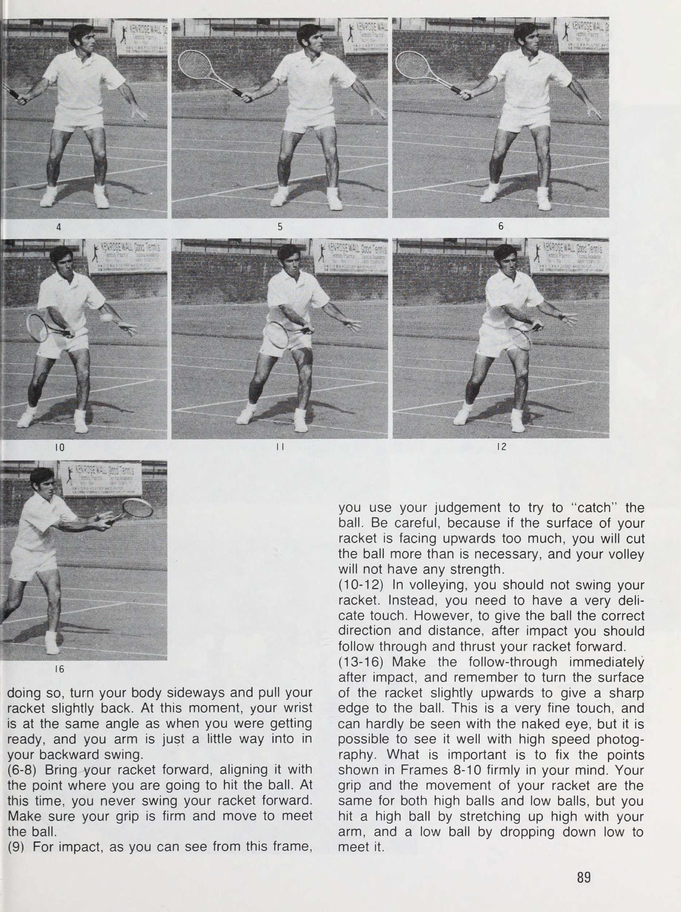
Khi nào tôi chơi một cú vô lê, cảm giác khi tôi đánh bóng hơi phẳng. Nó không phải là một ổ đĩa, nhưng nó có cảm giác như một cú chạm nhẹ. Vào lúc đó, tôi thường trượt bề mặt vợt của tôi dưới quả bóng và tạo thành một bệ đỡ cho nó. Điều này không bao giờ phóng đại và khó có thể phát hiện được bằng mắt thường; đó là một phong trào cảm ứng tốt. Cú vô lê là một cú đánh cực kỳ quan trọng trong quần vợt hiện đại. Khi bạn đánh đôi, kỹ năng thực hiện cú vô lê của bạn có ảnh hưởng đáng kể đến kết quả của trận đấu.
tôi rất vui mừng được tìm thấy các cầu thủ trẻ ở học viện quần vợt của tôi ở Nhật Bản và ở đội trẻ
Hướng dẫn trẻ những điểm quan trọng của cú vô lê tại Rosewall Tennis; Học viện. Bạn nên hạ thấp cơ thể xuống. bóng, và không để mặt vợt chùng xuống thấp hơn cổ tay. trại của Phòng khám Quần vợt John Gardiner ở Hoa Kỳ chơi những cú vô lê hay hơn tôi có thể đã tưởng tượng. Khi thi đấu trên sân chậm, họ không nhận thức được tầm quan trọng của cú vô lê và trong nhiều trường hợp bỏ bê việc thực hành những cú vô lê chính xác.
Điều mà những người mới bắt đầu thường không làm với những cú vô lê đầu tiên của họ là giữ cho tay cầm của họ đủ chắc chắn. Họ thường di chuyển cánh tay và vợt quá nhiều và đánh bóng khiến nó bay lên không trung. Sẽ là sai lầm nếu uốn cong cổ tay và di chuyển đầu vợt của bạn, hoặc đưa vợt về sau một cú vung vợt dài để vợt ở trên quả bóng khi bạn đánh nó. Cú vô lê không phải là cú đánh mà bạn đánh trả bóng bằng một cú vung vợt rộng; đó là cách bạn giữ vợt chắc chắn và đánh bóng rất mạnh ngay chính giữa dây của bạn.
Khi định đánh bóng, bạn không thể đợi bóng. Bạn phải luôn có cảm giác tiến một bước về phía trước và ngay cả khi bóng cao một chút hoặc gần lưới một chút, bạn vẫn sẽ đánh trúng nó. Khi đó, bạn sẽ có thể tung ra những cú vô lê mạnh hơn và sẽ ít lần bạn trượt hơn. Khi trẻ đang cố gắng thực hiện cú vô lê nhưng không thể xử lý vợt một cách khéo léo hoặc tự do, hãy để trẻ cầm vợt cao hơn cán vợt khoảng 2 inch (5 cm) và động tác của trẻ sẽ sớm trở nên thành thạo.
tôi nên muốn thấy mọi người dành cùng một lượng thời gian để luyện tập cú vô lê cũng như luyện tập các cú đánh.
Rosewall tung một quả bóng cao, chạm vào mặt vợt.
Trong môn vô lê, cú xoay người không phải là điều quan trọng; đó là độ bám chắc chắn và lực đẩy về phía trước theo hướng bạn muốn đánh bóng. Khi chuyền bóng, bạn không nên đợi bóng đến chỗ mình; bạn nên chủ động di chuyển hoặc bước về phía bóng.
Cú vô lê thuận tay Thế đứng cơ bản giống như các cú đánh khác—mặt hướng về phía lưới. Đối mặt với đối thủ với hai chân thẳng hàng, khi bóng đến tay thuận tay, hãy đưa chân trái về phía trước và cố gắng thực hiện cú vô lê. Để luôn có thể di chuyển nhanh chóng, bạn cần phải có thế đứng cân bằng một cách tự nhiên. Khi bóng được trả về nhanh và bạn không kịp xoay người sang ngang hợp lý, bạn nên vặn hông và xoay nửa thân trên về phía lưới.
Nếu bạn có thể làm được điều này, bạn sẽ có thể đánh được một cú vô lê thuận tay có mục tiêu tốt, ngay cả khi chân bạn chưa di chuyển vào đúng vị trí. So với những cú đánh trên mặt đất, cú vô lê là một cú đánh dễ dàng đánh ở một góc hơn nhiều. Nếu bạn có thể thực hiện cú vô lê ở một góc nhỏ thì bạn sẽ dễ dàng ghi được điểm. Bí quyết để đánh bóng theo một góc không phải là để đầu vợt của bạn chùng xuống mà là giữ nó bằng tay cầm chắc chắn và cổ tay vững chắc.
Ngay cả với môn vô lê, gần đây việc đánh bóng đã trở nên chấp nhận được khi điểm bạn tiếp xúc với bóng hơi hơi về phía trước cơ thể. Đối với những người dường như không thể có được cảm giác chính xác về vị trí đánh bóng và cảm giác va chạm, hãy thử duỗi tay phải ra phía trước và chéo ra khỏi cơ thể khi nhận bóng. Nếu bạn thực hiện chuyển động này bằng chân cũng như tay, bạn sẽ có thể có được cảm giác của cú vô lê thuận tay.
Cho dù đó là cú vô lê cao trên đầu hay cú vô lê thấp dưới thắt lưng của bạn, cách bạn sử dụng vợt không bao giờ thay đổi. Khi bạn đang chơi một quả bóng cao và bạn đã thoát khỏi lưới khá tốt, hãy đưa vợt của bạn đến điểm mà bạn định đánh bóng, mặt đối mặt với bóng và đánh nó. Khi đánh bóng cao ở gần lưới, bạn đánh bóng hơi hướng xuống dưới và khi cách xa lưới một chút, bạn nên phán đoán độ cao của lưới, cân nhắc xem mình cách đường cuối sân bao xa và xử lý cú đánh cho phù hợp.
Bóng thấp là những cú đánh khó và thường mắc lỗi trong các trận đấu thực tế. Cẩn thận không để đầu vợt của bạn chùng xuống, kéo nhẹ vợt về vị trí thấp và để đánh bóng, hãy di chuyển vợt sao cho thẳng hàng với độ cao của điểm bạn định đánh bóng. Điều quan trọng là phải cúi xuống và đưa mắt lên gần độ cao
của quả bóng. Khi bạn chơi rất gần lưới hoặc thậm chí khi bạn không chơi gần như vậy nhưng bóng ở mức thấp, để đảm bảo bóng của bạn vượt qua lưới, hãy sử dụng cổ tay và lật mặt vợt lên cao nhất có thể. Sau khi bóng đã ở trên bề mặt vợt, hãy đưa bóng sâu vào phần sân đối phương. Bạn phải đánh giá loại và tốc độ của quả bóng đến với bạn, đồng thời xem xét lực tốt nhất để truyền cho quả bóng mà bạn đánh trả.
Nói chung, nếu bóng của đối thủ của bạn có lực xoáy, bạn nên cố gắng cắt giảm điều này một chút; mặt khác, nếu quả bóng là sản phẩm của Slice, hãy nhắm cao hơn lưới một chút và thực hiện cú vô lê như thể bạn chỉ muốn đưa bóng qua lưới. Với một quả bóng động, bất kỳ loại bề mặt nào bạn đánh vào nó đều sẽ gây ra sự bay lên mạnh mẽ, trong khi ngược lại, với Slice, quả bóng sẽ đi theo đường đi thấp. Trong cú vô lê thuận tay, bạn bước về phía trước bằng chân trái và đặt mình nghiêng về phía bóng.
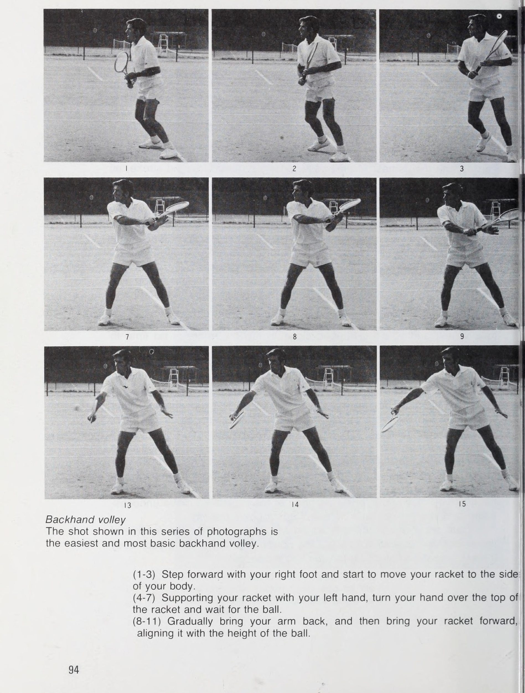
khi thực hiện một cuộc tấn công mà không cần tiến nhanh về phía trước và tung cú vô lê sẽ có hiệu quả giúp đối thủ của bạn có thời gian thư giãn. vợt của bạn đưa lên cao và đánh nhẹ. Để bóng cao, bạn nên kéo chuyển động đi xuống. 8/
Cú vô lê thuận tay này cao hơn lưới một chút và là cú vô lê dễ đánh nhất. Do đó, bạn nên xem xét nó kỹ lưỡng, như loại cú vô-lê cơ bản. (1) Hãy sẵn sàng với vợt của bạn ở phía trước và hướng về phía trước, đồng thời đợi để bạn có thể vung vợt nhanh theo bất kỳ hướng nào mà bóng bay đến. Điều quan trọng là giữ cho đầu gối của bạn luôn được uốn cong. (2-5) Khi bóng đến bên thuận tay của bạn, hãy đặt chân trái của bạn trước chân phải của bạn, đồng thời
mf pore: ty HBS EE FESS 4a Te as tent rae: ey SEN ese ea ‘ ewes. Wee © ales Sy i ay ea is oe oe pom 10 ; 1, làm như vậy, xoay người sang một bên và kéo nhẹ vợt về phía sau. Tại thời điểm này, cổ tay của bạn ở cùng một góc như khi bạn chuẩn bị sẵn sàng và cánh tay của bạn chỉ cách một chút so với cú xoay về phía sau. (6-8) Đưa vợt của bạn về phía trước, căn chỉnh nó với điểm bạn định đánh bóng. Lúc này, bạn không bao giờ vung vợt về phía trước.
Đảm bảo tay cầm của bạn chắc chắn và di chuyển để đón bóng. (9) Đối với tác động, như bạn có thể thấy từ khung hình này, bạn sử dụng khả năng phán đoán của mình để cố gắng “bắt” bóng. Hãy cẩn thận, vì nếu bề mặt vợt của bạn hướng lên trên quá nhiều, bạn sẽ cắt bóng nhiều hơn mức cần thiết và cú vô lê của bạn sẽ không có chút sức mạnh nào. (10-12) Khi đánh cú vô-lê, bạn không nên vung vợt. Thay vào đó, bạn cần phải có sự tiếp xúc thật tinh tế. Tuy nhiên, để đưa bóng đi đúng hướng và khoảng cách, sau khi va chạm bạn nên đánh theo và đẩy vợt về phía trước.
(13-16) Thực hiện cú đánh tiếp theo ngay sau khi va chạm, đồng thời nhớ lật mặt vợt hơi hướng lên trên để tạo cạnh sắc cho bóng. Đây là một điểm nhấn rất tinh tế và khó có thể nhìn thấy bằng mắt thường nhưng có thể thấy rõ điều đó bằng chụp ảnh tốc độ cao. Điều quan trọng là khắc sâu những điểm được hiển thị trong Khung 8-10 vào tâm trí bạn. Cách cầm vợt và chuyển động vợt của bạn là như nhau đối với cả bóng cao và bóng thấp, nhưng bạn đánh bóng cao bằng cách giơ cao cánh tay lên cao và đánh bóng thấp bằng cách thả xuống thấp để gặp nó.
Đối với một quả bóng thấp hơn lưới, bạn nên tiến về phía trước càng xa càng tốt để đánh nó. Sau khi đánh xong, bề mặt vợt của bạn phải được xoay sao cho nó hơi hướng lên trên. tôi ơi. = =e Cây HIB Sasceaoarrth eaocosecnaa'ae SBaeeve tty seagugacsSrc sasenenes we Trong cú vô-lê, việc tạo một góc nhỏ với bề mặt vợt của bạn sẽ tạo ra sự khác biệt lớn, vì vậy điều quan trọng là phải làm đúng điều này.
, hãy nhớ dành thời gian cho một cú vô lê đơn giản trên lưới và quan sát bóng cẩn thận.
- ‘ . ‘ i ~ ¥ me ac eee a e fe acm a i ce RENE e 4S & ee oe i: é “Đối với cú vô lê trái tay, bạn cũng nên cầm vợt thật chắc và đánh bóng với góc bề mặt chính xác của vợt. ene ee eee® Hitt
Cú vô lê trái tay Sở trường đánh bóng bằng cú vô lê trái tay không khác gì cú vô lê thuận tay. Tuy nhiên, tôi đã nhận thấy Một số người gặp rắc rối vì khả năng cầm nắm của họ. Nếu sử dụng kiểu cầm Eastern Grip thuận tay hoặc thậm chí gần giống kiểu Western Grip, tôi không chấp nhận điều này đối với một cú vô lê trái tay. Nói chung, hầu hết các cầu thủ hàng đầu đều sử dụng cùng một kiểu cầm vợt cho cú vô lê, cú giao bóng và cú đập bóng của họ. Trong trường hợp của tôi, ngoài cú thuận tay của tôi, tất cả các cách cầm vợt khác của tôi đều giống nhau cho tất cả các cú đánh.
Như một gợi ý dành cho các bạn trẻ và những người mới bắt đầu, trước tiên hãy thử sử dụng cách cầm vợt mà bạn sử dụng cho cú đánh thuận tay cho cú vô lê thuận tay và cách cầm vợt mà bạn sử dụng cho cú đánh trái tay của mình cho cú vô lê trái tay. Ngoài ra, giống như hầu hết các cầu thủ hàng đầu, hãy tìm cách cầm vợt mà bạn cảm thấy là dễ sử dụng nhất và tự nhiên nhất cho cả cú vô lê thuận tay và trái tay. Tôi muốn giới thiệu một trong hai phương pháp. Khi bạn đã thành thạo về cú vô lê, hãy quyết định cách cầm vợt mà bạn cho là phù hợp nhất với mình và sử dụng nó cho cả cú vô lê thuận tay và trái tay của bạn.
Trong các cú đánh chạm đất, bạn có nhiều thời gian để chuyển từ thuận tay sang trái tay. Khi bạn đang phản ứng với một cú vô lê và bạn bị mắc kẹt ở gần lưới, bạn sẽ không có thời gian để chuyển tay cầm. Nói chung, đây là lý do tại sao đối với tôi, có vẻ như việc thực hiện cú giao bóng, vô lê và cú đánh trái tay của bạn bằng một cách cầm là cách dễ dàng nhất. Những điểm cần cẩn thận trong cú vô lê trái tay gần như giống hệt với những điểm cần chú ý trong cú đánh trái tay.
Giữ tay cầm và cổ tay chắc chắn, đồng thời kéo vợt về độ cao tương đương với điểm bạn định đánh bóng. Lúc này, hãy kéo vợt về phía sau, dùng tay trái đỡ nhẹ để mặt vợt không bị lung lay. Khi đánh bóng không được cong cổ tay. Đẩy vợt và cánh tay của bạn về phía trước cùng nhau. Tại thời điểm va chạm, bạn phải giữ thăng bằng, hai tay duỗi thẳng để đánh bóng chắc chắn.
Nếu bạn di chuyển cổ tay, đầu vợt sẽ di chuyển một cách không cần thiết và bạn sẽ không có đủ khả năng kiểm soát bóng. Động tác chân của bạn và hướng mà bạn đối mặt là ngược lại với động tác của cú vô lê thuận tay, nhưng các điểm bao gồm việc vặn người từ thắt lưng và bước về phía trước là như nhau.
Cú vô lê trái tay Cú đánh trong loạt ảnh này là cú vô lê trái tay cơ bản và dễ dàng nhất. (1-3) Bước chân phải về phía trước và bắt đầu di chuyển vợt sang một bên cơ thể. (4-7) Dùng tay trái đỡ vợt, lật tay lên trên mặt vợt và chờ bóng. (8-11) Dần dần đưa cánh tay của bạn ra sau, sau đó đưa vợt về phía trước, sao cho vợt thẳng hàng với chiều cao của quả bóng.
(12-14) Để có tác động, hãy cầm vợt thật chắc và đánh bóng cẩn thận, như thể bạn đang bắt và giữ bóng trên vợt. Ngay sau khi va chạm, chuyển động của bề mặt vợt phải ngắn và sắc nét theo hướng bạn muốn đánh bóng. (15-16) Đẩy bóng nhẹ để truyền đúng hướng và tốc độ. Giống như trong cú vô lê thuận tay, hãy cẩn thận để chuyển động của bề mặt vợt là chuyển động trượt dưới bóng.
Sau khi va chạm, trọng lượng của bạn sẽ có sự thay đổi đáng kể.
Sau khi đánh bóng, giữ nguyên vợt và theo bóng, đẩy về phía trước. Bí quyết để đánh bóng khéo léo là giữ khuỷu tay thẳng và cổ tay vững vàng.
Nửa cú vô lê: Thực thi và sắp xếp
Khi trả bóng bằng cú vô lê trái tay, hãy sử dụng cổ tay của bạn để làm cho đầu vợt của bạn hoạt động hiệu quả. Để bóng cao hơn mắt bạn, hãy giơ vợt lên để đánh. Bạn phải giữ chắc tay khi làm điều này.
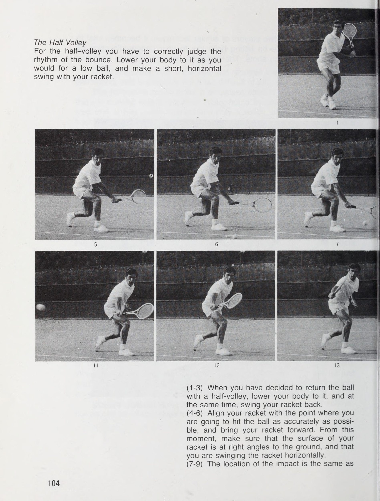
Cú vô lê trái tay cao là một trong những cú đánh khó nhất trong tất cả các cú đánh, bởi vì, khi bạn cúi người về phía sau và vung vợt lên cao, bạn đang ở một vị trí rất dễ mất thăng bằng. Khi bạn thực hiện một cú vô lê trái tay cao, hãy giữ bình tĩnh và cố gắng đánh nó cẩn thận hơn một chút so với các cú đánh khác. Hơn nữa, nếu bạn trả bóng cực cao và sử dụng cổ tay, điều cần cẩn thận là không làm cổ tay bị thương do dồn quá nhiều lực vào bóng.
Bí quyết để trả lại cú vô lê trái tay cao một cách chính xác là để bóng đi xuống rồi đánh vào thời điểm bạn thấy dễ đánh nhất và có thể sử dụng sức mạnh hiệu quả nhất. Điều này có thể không phải lúc nào cũng có thể thực hiện được. Khi bạn đánh bóng thấp bằng cú vô lê trái tay, bạn phải chú ý đến những điểm tương tự như khi thực hiện cú đánh trái tay. Bạn không được lười biếng; nhưng hãy cố gắng đánh nó trong khi bạn đang tiến về phía trước. Về phần động tác chân của bạn, hãy bước vào đó nhiều nhất có thể bằng chân phải, quay sang ngang lưới, nhưng hãy cẩn thận để không bị mất thăng bằng khi cúi người.
Điều quan trọng nhất trong cả cú vô lê thuận tay và trái tay của bạn là nắm chắc vợt của bạn và đẩy nó về phía trước. Sức mạnh bạn sử dụng tại thời điểm này thay đổi tùy thuộc vào độ cao và tốc độ bóng của đối thủ, độ xoáy của nó và vị trí bạn đang cố gắng đánh nó. Bạn không bao giờ được vung vợt xuống, dùng lực cắt bóng hoặc lật mặt vợt bằng cổ tay. Rosewall hướng dẫn cách đánh một quả bóng bay về phía mình.
7 pe: ¢ tnd ee Để có đường bóng ngắn, thấp, hãy bước về phía trước để đón bóng nhiều nhất có thể và thực hiện cú vô lê. Cong đầu gối của bạn và thả người xuống, nhưng luôn giữ chuyển động của vợt theo chiều ngang.
Như bạn có thể thấy từ loạt ảnh chụp các cầu thủ hàng đầu đang thực hiện cú vô lê, từ thời điểm bạn đánh bóng cho đến khi kết thúc cú đánh theo bóng, cánh tay của bạn phải thẳng. Đây là những gì mang lại cho quả bóng cú đấm của nó. Ngoài vai trò là cú đánh trả, cú vô lê còn là một cú đánh tấn công nên dù bạn thực hiện nó vào bất cứ lúc nào hay ở bất cứ đâu, bạn cũng không được để đối thủ có thời gian rảnh rỗi. Tôi thường tiến tới sau tôi quay trở lại và cố gắng bắt kịp người giao bóng, người có thể đang lao về phía trước sau khi hoàn thành cú giao bóng của mình một cách bất ngờ.
Trong một trong những cái gọi là 'trận đấu marathon' mà không người chơi nào có thể phá được cú giao bóng của người kia, thì thường có thể vượt qua bằng cách sử dụng chiến lược này. Tôi nên mong muốn mọi người thử sử dụng cú vô lê một cách hiệu quả và thường xuyên.
Làm quen với việc chơi những cú vô lê của bạn một cách thoải mái và với hình thức tự nhiên. Với một đường bóng cứng, nhanh, bạn phải giữ vững toàn bộ cơ thể. Hãy chắc chắn rằng bóng của đối thủ không áp đảo bạn.
Cú vô lê trong tất cả các cảnh quay, đây là cảnh đòi hỏi sự chạm và căn thời gian tinh tế nhất, và có lẽ là cảnh khó nhất. Cú vô lê nửa vời có xu hướng là một cú đánh phòng thủ. Nó chỉ được chơi khi không có gì khác để làm. Bạn nên cố gắng tránh nó nếu có thể; bước về phía trước một hoặc hai bước và thực hiện cú vô lê, hoặc lùi lại hai đến ba bước và thực hiện cú đánh. Nếu bạn có thể làm được một trong hai điều này, bạn sẽ ở vị thế tốt hơn để tự vệ.
Tuy nhiên, có những cầu thủ thường xuyên sử dụng cú vô lê nửa người. Một trong số họ là Tom Okker, người thậm chí còn trả lại một nửa cú vô lê (nảy ngắn) từ khu vực đường biên ngang, tấn công mà không cho đối thủ của mình bất kỳ thời gian rảnh rỗi nào. Cú vô lê nửa hiệp được sử dụng nhiều hơn trong các trận đấu đôi hơn là trong trận đấu đơn. Trong đánh đôi, đối thủ của bạn sẽ nhận bóng khi biết rằng người giao bóng sẽ lao về phía trước. Có nhiều lúc bạn phải coi cú giao bóng của anh ấy như một cú vô lê nửa vời.
Trong khu vực hạn chế giữa đường giao bóng và lưới, việc trả bóng bằng cú vô lê nửa chừng đương nhiên trở nên khó khăn, đặc biệt là trong một trận đấu đôi. Vào những lúc như thế này, điều quan trọng là bạn phải chơi tốt cú nửa vô lê của mình, vì điều này ảnh hưởng đến việc bạn có giữ được quả giao bóng hay giành được điểm hay không. Hãy cẩn thận khi thực hiện cú vô lê nửa chừng khi luôn cúi xuống, từ khi bạn thực hiện động tác xoay người lùi lại cho đến khi kết thúc lượt theo dõi.
Sau khi va chạm, không được đứng thẳng lên đột ngột, lật mặt vợt lên hoặc vung vợt quá cao. Điều này sẽ khiến bạn mất quyền kiểm soát bóng. Giống như trong cú vô lê đầy đủ, cố gắng không để vợt của bạn chùng xuống thấp hơn cổ tay. Cần thực hiện một cú xoay ngắn, mượt mà, song song với mặt đất nhất có thể. Trong cú vô lê nửa chừng, việc luôn luôn để mắt đến bóng là cực kỳ khó khăn, nhưng hãy cố gắng làm như vậy khi có thể. Sau đó, trong khi bạn đang nhìn vào quả bóng, bạn sẽ nắm được nhịp độ nảy và thời gian, và vung vợt của bạn để phù hợp với chúng.
Khi việc này diễn ra tốt đẹp, bạn có thể đánh trả một quả bóng hiệu quả chỉ sượt qua lưới và chỉ với một cú đánh, bạn có thể biến trò chơi phòng thủ thành trò chơi tấn công. Tôi tin rằng phần lớn mọi người không thực hành cú vô lê nửa chừng, nhưng có thể tưởng tượng, cú đánh này trở nên rất quan trọng đối với những cầu thủ hàng đầu.
Trong một trận đấu giữa hai người chơi có kỹ thuật tương tự, điều quan trọng là bằng cách nào đó tập trung vào việc đánh những quả bóng thấp đến phần sân của đối thủ bằng cách hạ gục những cú đánh cao của anh ta. Cú vô lê nửa chừng là một cú đánh chiến đấu thực sự và cần được hoàn thiện. Cú vô lê nửa hiệp là một cú đánh quan trọng trong các trận đấu thực tế. Luyện tập mỗi ngày để có được thời gian và sức mạnh phù hợp.
Cú vô lê một nửa Đối với cú vô lê nửa người, bạn phải đánh giá chính xác nhịp điệu của cú nảy. Hạ thấp cơ thể của bạn như cách bạn thực hiện với một quả bóng thấp và thực hiện một cú xoay ngang, ngắn bằng vợt của bạn. (1-3) Khi bạn quyết định trả bóng bằng cú vô lê nửa chừng, hãy hạ thấp cơ thể xuống và đồng thời vung vợt về phía sau. (4-6) Căn chỉnh vợt của bạn với điểm mà bạn định đánh bóng chính xác nhất có thể và đưa vợt về phía trước.
Từ thời điểm này, hãy đảm bảo rằng bề mặt vợt của bạn vuông góc với mặt đất và bạn vung vợt theo chiều ngang. (7-9) Vị trí va chạm giống như
cho một cú vô lê. Hãy để mắt đến quả bóng nhiều nhất có thể và đánh nó chính xác vào giữa vợt của bạn. Ngay cả khi đã đánh bóng, bạn cũng không nên đứng thẳng người lên ngay. (10-12) Bạn không nên thực hiện một cú vung vợt hoàn toàn mà nên cố tình dừng vợt của mình. Đây là kết quả giúp bạn có thể đánh bóng mạnh. (13-16) Sau đó đứng thẳng với động tác _ thư giãn.
Dịch vụ: Nhịp điệu, Cân bằng & Vị trí
Nhịp điệu và sự cân bằng Dịch vụ này là cú đánh duy nhất trong quần vợt mà bạn hoàn toàn có thể tự do đánh theo bất kỳ cách nào bạn muốn. Bạn ném bóng đến nơi bạn có thể đánh dễ dàng nhất và sau đó bạn có thể tự do lựa chọn giữa một cú đánh toàn lực, một cú xoay tròn, một cú giao bóng chậm về phía sân đối thủ. Tất nhiên, để giúp giành chiến thắng trong trò chơi, bạn nên cố gắng cung cấp một dịch vụ mạnh mẽ và hiệu quả. Cú giao bóng bao gồm tung bóng lên bằng tay trái và vung bóng bằng động tác vai phải khi bóng ở trên không.
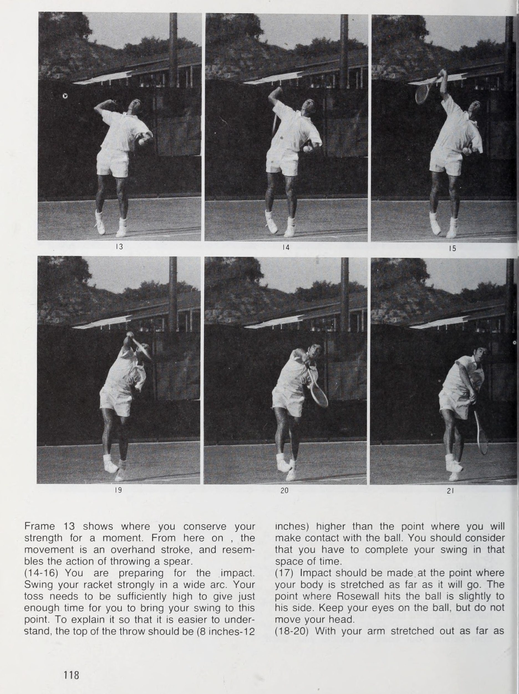
Đây được gọi là cú giao bóng. Tốt nhất, bạn nên đánh bóng từ điểm cao nhất có thể với cơ thể và cánh tay duỗi thẳng hoàn toàn. Cú giao bóng có thể được thực hiện mà không có sự can thiệp dù là nhỏ nhất từ đối thủ của bạn. Không giống như những cú đánh khác, rất khó để có được tư thế thích hợp vì bạn phải phối hợp sử dụng cả hai tay. Cú giao bóng là một cú đánh trong đó nhịp điệu và sự cân bằng là điều cần thiết. Toàn bộ cơ thể phải chuyển động rất nhẹ nhàng và nếu bạn là người mới bắt đầu, điều này rất khó thực hiện đúng cách.
Việc kết hợp cú tung bóng chính xác với cú xoay người nhịp nhàng là điều quan trọng nhất trong cú giao bóng của bạn.
Động tác vai phải được sử dụng trong giao bóng rất giống với việc ném bóng. Hãy coi cây vợt như một phần mở rộng của cánh tay bạn. Hành động đu dây phụ thuộc vào loại cơ thể và đặc điểm thể chất của bạn, tôi nên dịch vụ của mỗi người có phần khác nhau. Tuy nhiên, điều đó là hiển nhiên tôi rằng trừ khi bạn sử dụng toàn bộ cơ thể của mình để thực hiện một cú xoay người tốt và mượt mà, bạn không thể đạt được tốc độ và khả năng kiểm soát cú đánh giao bóng thích hợp. Cách bắt đầu theo kiểu Eastern là tốt nhất Nếu bạn đã thực hiện một cú giao bóng không tự nhiên với cú vung bóng không đúng cách trong một thời gian dài, bạn sẽ thấy rất khó để từ bỏ thói quen giao bóng xấu của mình.
Sẽ tốt hơn nhiều nếu bạn thử và hoàn thiện một cú giao bóng tốt khi bạn mới bắt đầu học trò chơi. Đánh giá từ kinh nghiệm trong quá khứ, những người mới bắt đầu học cách giao bóng đúng cách khi mới bắt đầu chơi trò chơi này sẽ sớm phát triển được một cú xoay người mượt mà, tự nhiên. Điều này là do họ có thể kích hoạt cơ bắp của mình một cách tự do và học trò chơi một cách dễ tiếp thu và không có định kiến. n f- ]Thứ bảy 40 — re tôi bee i \ sp ti 7 4 ys 7a fe x = Mặc dù thực tế dịch vụ này là vũ khí tấn công nhưng số người có thể sử dụng nó lại ít đến mức đáng ngạc nhiên.
Cần phải thực hành nhiều.
Khi giao bóng, điều quan trọng là phải căng cơ thể của bạn ra xa nhất có thể để đánh bóng.
Khi trẻ lần đầu tiên học cú giao bóng, cách dễ nhất là bắt đầu bằng cách cầm vợt thuận tay. Nếu bạn có Eastern Grip hoặc ở gần nó thì không có vấn đề gì. Nếu bạn có Western Grip, bạn sẽ phải thay đổi nó. Lúc đầu, tôi khuyên bạn nên tìm hiểu quy trình giao bóng bằng cách sử dụng cách cầm vợt thuận tay, sau đó dần dần chuyển sang cách cầm vợt trái tay. Gần như tất cả các tay vợt hàng đầu đều giao bóng bằng cách cầm vợt trái tay. Cách cầm vợt trái tay cho phép bạn thực hiện cú giao bóng đa dạng hơn—bạn có tốc độ cao hơn, có thể thay đổi vị trí tung bóng và hướng cơ thể, đồng thời có được sự tự do hành động cổ tay cao hơn.
Khi nói đến _ đối với các cầu thủ trẻ, họ nên ném bóng lên độ cao mà họ dễ đánh nhất.
Hãy quan sát kỹ đối thủ, giữ bình tĩnh và chuẩn bị sẵn sàng; sau đó giao bóng. Các loại dịch vụ Đây là mô tả ngắn gọn về ba loại dịch vụ cơ bản. DỊCH VỤ BẰNG BẰNG Đầu vợt đánh bóng thẳng mà không cần tác động bằng cổ tay. Dịch vụ phẳng đạt tốc độ tối đa. Cách dễ nhất để thực hiện là ném bóng với vai trái nghiêng về phía trước. DỊCH VỤ CẮT fide Vợt “chải” phần trên bên phải của quả bóng và tạo ra xoáy ngang.
Rất khó để trả lại quả giao bóng vì bóng xoáy và nảy sang một bên phần sân đối phương. DỊCH VỤ SEIN Quả bóng được ném qua đầu và vợt tạo ra độ xoáy trên bằng cách tung một cú đánh nhẹ vào đầu quả bóng. Sau khi qua lưới, bóng rơi xuống đột ngột rồi bật cao. mã số
Hãy luyện tập giao bóng đủ khi bạn còn trẻ, hoặc bắt đầu để bạn trở thành một tay vợt có cú giao bóng mạnh.
ee wr? - = oe, Được trời phú cho một khung hình cao lớn, Smith mở đầu trận đấu với lợi thế của mình bằng một cú giao bóng mạnh.
Người chơi hạng nhất có phong cách giao bóng riêng. Stan Smith và John Newcombe có được con át chủ bài bằng một cú giao bóng ngang mạnh mẽ. Nguyên tắc giao bóng của tôi là thực hiện cú giao bóng đầu tiên bằng phẳng và đối với cú giao bóng thứ hai, sử dụng một lát nhỏ, nhưng điều này thay đổi tùy thuộc vào hoàn cảnh của trận đấu, quần vợt của đối thủ và mặt sân. Khi giao bóng, trước tiên bạn phải xác định thế đứng của mình. Theo quy định, khi bạn giao bóng phẳng hoặc giao bóng cắt, đường nối dài của đầu ngón chân trái và phải của bạn phải thẳng hàng theo hướng bạn muốn đánh bóng.
Nói cách khác, hông trái của bạn phải đối mặt với người nhận. Những người mới bắt đầu có xu hướng đối mặt với quá nhiều. Khi nào tôi huấn luyện các cầu thủ trẻ, xu hướng này được thấy thường xuyên. Tôi đã thấy điều này nhiều hơn ở những người giao bóng với kiểu cầm vợt kiểu Eastern, được sử dụng trong cú đánh thuận tay. Những người chơi đạt đẳng cấp cao nhất thường giao bóng bằng cách cầm trái tay; thì vị trí cơ thể chính xác sẽ có được một cách tự nhiên. Việc tung bóng quyết định việc tung bóng rất quan trọng bởi vì việc bạn thực hiện một cú giao bóng tốt hay xấu phụ thuộc vào việc bạn tung bóng chính xác như thế nào.
Có một số người gặp khó khăn với cú xoay người khi giao bóng, và nguyên nhân thường là do họ ném bóng kém. Phong cách tung khác nhau tùy theo người chơi. Một số người chơi giơ cánh tay trái của họ lên và tung vợt ngay khi vợt bắt đầu thực hiện động tác backswing. Những người khác đưa cả hai tay xuống, cánh tay trái giơ lên để tung bóng trong khi cánh tay phải di chuyển vợt xung quanh trong động tác ném bóng—hoặc chuyển động liên tục để đánh bóng ở điểm cao nhất. Quả bóng phải luôn được ném vào cùng một vị trí.
Chuyển động của bạn phải luôn đi theo một con đường liên tục và trơn tru, không được quá nhanh hoặc quá chậm. Tôi đã đưa ra lý do vì sao tư thế tung bóng lại quan trọng đến vậy. Bạn nên tìm thế đứng của riêng mình, sử dụng khu vực 12 inch (30 cm) phía trước đầu ngón chân trái, nơi bạn có thể đánh bóng thoải mái nhất và tại đó bạn ném bóng một cách nhất quán. Có nhiều cầu thủ ném bóng về phía lưới nhiều hơn. Điều này cho phép người chơi chiếm vị trí trên lưới nhanh hơn và cũng cho phép người chơi đạt được tốc độ bóng cao hơn bằng cách sử dụng trọng lượng cơ thể.
Bởi vì | tôi không cao—đây là một lợi thế khi giao bóng và đánh đầu—|! đừng ném
tiến về phía trước nhiều như những người chơi khác. Với nhu cầu về sự nhất quán trong việc tung bóng, điều quan trọng nhất là độ cao của quả bóng được ném cho phép thực hiện một cú xoay hoàn toàn. Nếu tung bóng quá thấp, cú swing sẽ không hoàn chỉnh vì không có đủ thời gian. Nếu ném quá cao, bạn sẽ làm mất nhịp điệu trong chuyển động, khiến chuyển động dừng lại hoặc thậm chí thêm chuyển động bổ sung. Một dịch vụ nhanh chóng đánh vào phía trước. *" Hãy để mắt đến quả bóng tại thời điểm va chạm.
(2-4) Bắt đầu cú swing của bạn một cách chậm rãi nhưng vẫn duy trì nhịp điệu tự nhiên. (5-7) Trong khi kéo vợt về phía sau, tung bóng lên. Đưa tay lên ngang người rồi thả bóng ra. (8-10) Trong Khung 9, cả hai tay đều giơ lên theo cách tương tự. Tuy nhiên, trong trường hợp của tay phải, tầm vươn lên là từ khuỷu tay. (11-13) Dùng cổ tay di chuyển vợt từ sau đầu ra sau lưng.
ee Khung 13 cho thấy nơi bạn bảo toàn sức lực trong giây lát. Từ đây trở đi, chuyển động này là một cú đánh quá tay và giống với hành động ném một ngọn giáo. (14-16) Bạn đang chuẩn bị cho cú va chạm. Hãy vung vợt mạnh mẽ theo một vòng cung rộng. Cú ném của bạn cần phải đủ cao để có đủ thời gian cho bạn thực hiện cú swing của mình đến thời điểm này. Để giải thích cho dễ hiểu hơn, đỉnh của cú ném phải cao hơn (8 inch-12 inch) so với điểm mà bạn sẽ tiếp xúc với bóng.
Bạn nên cân nhắc rằng bạn phải hoàn thành cú đánh của mình trong khoảng thời gian đó. (17) Tác động nên được thực hiện tại thời điểm cơ thể bạn bị kéo căng hết mức. Điểm mà Rosewall đánh bóng hơi nghiêng về phía anh ấy. Giữ mắt của bạn trên quả bóng, nhưng không di chuyển đầu của bạn. (18-20) Với cánh tay của bạn duỗi thẳng ra xa
có thể hạ nó xuống bằng một cú xoay rộng. Bàn chân ban đầu được đặt ở phía sau phải theo chuyển động của cơ thể bạn. Bước về phía trước với nó, nâng mình lên trên các ngón chân của bàn chân trái. Hãy cẩn thận để tiếp tục quan sát khu vực của điểm va chạm. (21-24) Để kết thúc, bạn nên vung vợt hoàn toàn về phía dưới bên trái của cơ thể. Khi định tiến về phía trước, bạn nên di chuyển theo chân phải mà bạn đã bước vào sân bằng cách đưa chân trái về phía trước một cách tự nhiên và di chuyển bản thân về phía trước một cách nhanh chóng.
Đối với các cầu thủ trẻ và nữ, bạn nên tập ném qua cánh tay, giống như khi chơi bóng chày, trước khi bắt đầu tập đánh bóng để giao bóng, để làm quen với chuyển động của vai.
Hơn nữa, sẽ khó gặp bóng ở điểm va chạm thích hợp, vì bóng sẽ tăng tốc độ hơn khi rơi ở khoảng cách xa hơn. Vào những ngày nhiều gió, bạn có thể phải lăn đi ném lại vì quả bóng bị gió mạnh cuốn đi. Vợt, cánh tay và vai phải được mở rộng đến điểm cao nhất. Đây là độ cao đáng mơ ước nhất khi tung bóng, nơi bạn có thể vung vợt một cách mượt mà. Độ cao này phải là điểm mà bóng cao nhất trong không khí hoặc ngay sau khi bóng bắt đầu rơi.
Như bạn có thể thấy từ những điểm này, cú giao bóng có mối liên hệ rất chặt chẽ với việc tung và xoay người, và nếu một trong hai cú giao bóng thất bại hoặc khi bạn mất nhịp, bạn không thể thực hiện một cú giao bóng tốt. Khi bạn nhìn vào những cầu thủ hạng nhất có cú giao bóng tốt, cú tung và vung của họ rất đồng bộ và tự nhiên. Chuyển động trước khi va chạm phụ thuộc vào mức độ bạn giao bóng mạnh mẽ như thế nào và vào sức mạnh tập trung tại thời điểm va chạm. Đây là điểm chính trong giao bóng, mặc dù phong cách giao bóng có thể khác nhau tùy theo từng cá nhân.
tôi nâng vợt của tôi một cách nhẹ nhàng đến phía sau đỉnh vai phải của tôi, xoay vợt một cách tự nhiên từ vị trí đứng của tôi. Bạn không cần phải siết chặt cổ tay của bạn vào lúc này. Trong thời gian này, cơ thể phải hướng vuông góc với hướng bạn định đánh. Hạ đầu vợt xuống sát lưng bằng cách thả khuỷu tay vào tư thế ném. Sau đó, ở động tác tiếp theo, cổ tay và khuỷu tay của bạn duỗi thẳng hoàn toàn khi chúng di chuyển lên trên về phía va chạm.
Đây là khi cơ thể bạn được kéo căng hoàn toàn từ ngón chân đến đỉnh vợt, như bạn có thể thấy trong hình. Nói cách khác, bạn nên đánh bóng ở điểm cao nhất có thể. Sau khi đánh bóng, cơ thể của bạn phải dần dần di chuyển về phía lưới và hoàn thành cú đánh tiếp theo bằng cách đưa vợt xuống theo một cú xoay tròn lớn. Khi bạn thực hiện một cú giao bóng cắt hoặc phẳng, cú giao bóng của bạn sẽ kết thúc ở phía bên trái của cơ thể. Bạn có thể lao vào lưới một cách trơn tru vì trọng lượng của bạn nghiêng về phía trước.
Một điểm quan trọng cần nhớ là luôn để mắt đến bóng khi va chạm. Cố gắng không di chuyển đầu của bạn cho đến khi tác động hoàn thành và cố gắng không rời mắt khỏi quả bóng. Khi một người chơi trở thành người chơi cấp cao nhất, anh ta có thể thay đổi lối chơi của mình tùy theo tình huống trò chơi. Trong những trường hợp như cú đánh chạm đất, bạn có thể thay đổi độ xoáy của bóng và tung ra một quả bóng mạnh hoặc chậm hơn. Khi giao bóng, bạn có thể thực hiện những thay đổi đối với quả bóng ngoài việc chỉ
Duỗi thẳng cánh tay trái của bạn và ném bóng nhẹ nhàng lên không trung. Để thực hiện cú giao bóng của mình, bạn nên tung bóng lên cao hơn một chút, như trong hình này.
nhắm—tấn công với tốc độ hoặc làm đảo lộn thời gian của đối thủ bằng cách sử dụng một quả bóng quay. Hầu hết các cầu thủ hàng đầu hiện nay đều sử dụng cú đánh mạnh, tốc độ cao để giao bóng. Họ cố gắng giành điểm bằng cách giao bóng của mình. Trong trường hợp của tôi, cú giao bóng của tôi không có lực ổn định. Tôi sử dụng khả năng điều khiển và các vòng quay khác nhau để tạo ra một cú giao bóng đa dạng. Hãy nghĩ đến nơi bạn muốn giao bóng khi nào tôi giao bóng, tôi trước tiên hãy nghĩ đến vị trí cần nhắm và sau đó thường cố gắng giao bóng đến điểm yếu nhất của đối thủ.
tôi đừng cố ghi điểm khi giao bóng và thường không nghĩ | Có thể. Nói cách khác, tôi phải nghĩ thế nào tôi sẽ giành được điểm bằng cách dự đoán sự trở lại. Vì vậy, những điều tôi chú ý nhất khi giao bóng là đánh bóng ở điểm cao nhất, đồng thời duy trì nhịp điệu chính xác và cú vung bóng mượt mà. Đôi khi tôi giao bóng nhanh hơn hoặc giao bóng theo kiểu cắt hoặc xoay tùy theo tình huống, nhưng tôi luôn nhắm vào các vị trí khác nhau trên sân—| cố gắng đánh bóng ở nơi mà người nhận bóng không mong đợi.
Giao bóng không phải là chuyên môn của tôi. Cú thuận tay của tôi cũng không phải là cú đánh lý tưởng của tôi, cú đánh của tôi không được tự nhiên. Tôi có thể ném bóng tốt hơn bằng tay trái vì tôi bản chất tôi thuận tay trái. Có thể vì điều này mà | tôi không thể đạt được sự phối hợp đầy đủ khi tôi giao bóng bằng tay phải, trong khi tôi có thể đạt được nó bằng tay trái của tôi. Cú giao bóng bắt đầu trận đấu và có ảnh hưởng lớn đến trình tự điểm trong trận đấu. Bởi vì hành động giao bóng rất giống với hành động được sử dụng cho chi phí cao, việc bạn có thực hiện một hành động tốt hay không có thể ảnh hưởng rất lớn đến bạn.
Cố gắng học một hình thức nhịp nhàng và trôi chảy, học sai và thực hành.
cô ấy, người đã chế tạo ra một loại vũ khí giao bóng nhanh chóng của mình. | Trước khi giao bóng, hãy nghĩ đến điểm yếu của đối thủ. Luôn cố gắng đánh bóng sau khi thực hiện mục tiêu tích cực. Điều này được hỗ trợ bằng cách bạn dành thời gian bắt đầu cú đánh của mình.
Footwork cho dịch vụ Loạt ảnh này cho thấy footwork được sử dụng trong dịch vụ. (1) Chú ý không mắc lỗi chân, chọn vị trí đặt bàn chân trái hơi lùi về phía sau đường biên ngang. (2) Khi bạn ném bóng lên trên và vung cánh tay lên, hãy uốn cong đầu gối một chút và dồn trọng lượng của bạn lên bàn chân trước. (3) Từ thời điểm bạn thực hiện một cú vung vợt rộng với vợt ra sau người, bạn đã bắt đầu sẵn sàng cho cú va chạm.
(4) Cơ thể bạn duỗi ra và bạn đã đánh được bóng. Rosewall không nhảy lên khi giao bóng mà giữ các ngón chân của bàn chân trái cố định chắc chắn trên mặt đất. (5) Bạn đã đánh bóng và đang vung vợt xuống trước mặt. Chân phải của bạn vượt qua vạch và bạn bước vào sân.
Khi giao bóng, hãy thực hiện cú vung bóng bằng cách sử dụng toàn bộ lò xo tự nhiên của cơ thể và tại thời điểm tiếp bóng, hãy tập trung sức mạnh của bạn vào quả bóng.
The Smash: Jump Smash & Ground Smash
Làm chủ cú đập Trong cú đập, cú xoay gần như giống hệt như trong cú giao bóng. Bạn đang đánh một quả bóng được ném từ đối thủ của bạn. Bạn phải di chuyển xung quanh để vào vị trí vì bóng đã bay cao. Điểm nhấn mạnh của bạn là nơi nó đang đi xuống. Nó đồng bộ hóa thời gian của cánh tay và vợt của bạn khi tiếp xúc bóng ở điểm cao nhất và có thể cực kỳ khó khăn. Việc thực sự làm chủ được cú đập phụ thuộc vào việc bạn có thể di chuyển càng nhanh càng tốt đến nơi bóng sẽ chạm đất hay không - nói cách khác, đến vị trí mà bạn sẽ thực hiện cú đập của mình - và sẵn sàng khi nó chạm đất.
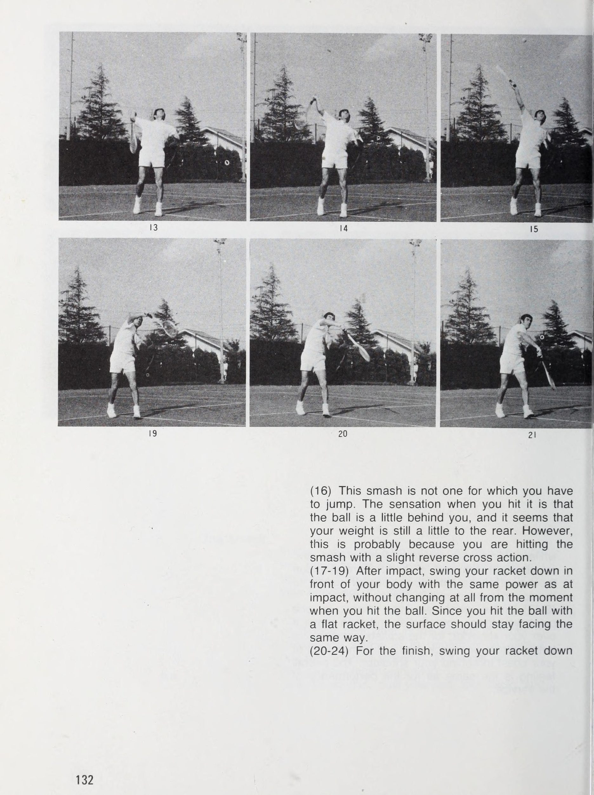
Những người có thể di chuyển nhanh hơn một chút và định vị ở vị trí mà họ có thể đánh bóng theo phong cách của riêng mình, vì những lý do này, chính là những người có thể thực hiện một cú đập ổn định. Để thực hiện một cú đập bóng đưa bóng vào phần sân đối phương một cách chính xác, bạn phải đặt cả hai chân xuống đất khi đánh bóng, bạn phải giữ thăng bằng và các điều kiện phải giống hệt như khi bạn giao bóng.
Nếu bạn không rời mắt khỏi quả bóng và nếu bạn có thể nhận bóng tốt khi nó rơi xuống điểm bạn muốn đánh thì kết quả sẽ tốt. Luôn luôn hướng mặt về phía lưới. Vì lý do đó, nếu bạn phải
Cú đập bóng là vũ khí cực kỳ cần thiết để giành chiến thắng trong trò chơi. Mọi người nên cố gắng biến mình thành một tay chơi có cú đập mạnh.
di chuyển về phía sau sân, di chuyển bằng cách nhảy cóc (chân trái trước ngón chân phải), giữ thăng bằng và di chuyển về bên phải. Bạn không bao giờ nên lùi lại khi đứng vuông góc với lưới. Giống như cú giao bóng, cú đập bóng là một phương pháp mà bạn thành công bằng cách đánh bóng mạnh nhưng có kiểm soát. Tất nhiên, mặc dù nói rằng tốc độ là điều cốt yếu, nhưng không cần phải nói rằng bạn cũng phải xem xét khu vực mà đối thủ đang phòng thủ và nhắm mục tiêu một cách tự nhiên vào nơi mà bạn cho là nơi dễ dàng giành điểm nhất.
Vì, không giống như dịch vụ giao bóng, bạn có thể tự do đặt bóng ở bất kỳ vị trí nào bạn muốn trên phần sân đối phương bằng cách xác định cách di chuyển và vị trí tiếp xúc với bóng. Nó trở nên phức tạp chỉ vì lý do đó. Bạn phải luyện tập cú đập bóng hàng ngày, có tính đến mọi hình thức chi phí.
Bí quyết để thực hiện một cú đập bóng tốt là di chuyển bản thân nhanh chóng và chính xác đến nơi bóng đã được lốp bóng sắp rơi xuống.
Trong cú đập bóng, bản thân cú xoay người có thể nói cũng giống như đối với cú giao bóng, nhưng vì bạn phải trả lại nhiều cú đánh khác nhau do đối thủ đánh nên rất khó. (1-3) Một điều cần thiết để thành thạo cú đập bóng là hãy nhớ trước tiên hãy luôn xoay người sang ngang về phía lưới khi bạn nhận thấy mình phải đối mặt với một cú lốp bóng. (4-8: Để thực hiện động tác này, hãy kéo chân trái về phía sau và
Pe te im $ ", + trong khi cầm vợt trước mặt và đỡ nó bằng tay trái, hãy đánh giá chính xác độ cao của cú lốp bóng. Di chuyển nhanh đến vị trí bên dưới nơi nó đang rơi xuống. (9-15) Không giống như khi giao bóng, tại một thời điểm, bạn hạ vợt xuống rồi di chuyển qua vai, đối với thời điểm đập bóng, tốt hơn là bạn nên cầm vợt từ trước ngực ra sau vai. Cảm giác chung giống như đối với đối với hiệu suất của dịch vụ.
(16) Cú đập này không phải là cú đập mà bạn phải nhảy. Cảm giác khi bạn đánh là bóng ở phía sau bạn một chút và dường như trọng lượng của bạn vẫn dồn về phía sau một chút. Tuy nhiên, điều này có thể là do bạn đang đánh cú đập bóng với một hành động chéo ngược nhẹ. (17-19) Sau khi va chạm, vung vợt xuống phía trước cơ thể với lực bằng như lúc va chạm, không hề thay đổi kể từ thời điểm bạn đánh bóng. Vì bạn đánh bóng bằng vợt phẳng nên bề mặt phải luôn hướng về phía trước.
(20-24) Để kết thúc, hãy vung vợt xuống
một cách tự nhiên về phía bên trái của cơ thể, giống như cách thực hiện cú giao bóng. Không cần phải nói cũng biết rằng tại thời điểm này, trọng lượng của bạn hoàn toàn dồn vào chân trái. Việc đầu của bạn thực tế ở cùng một vị trí và hầu như không di chuyển, cho thấy việc thực hiện cân bằng. Lưu ý Khi phải nhảy để đánh bóng, bạn phải nhảy ngay trước khi va chạm và sử dụng toàn bộ lực lò xo tự nhiên của cơ thể để đánh bóng. Điều quan trọng là phải căn thời gian tốt, căn chỉnh vợt của bạn với bóng và giữ thăng bằng sau khi đánh nó.
Cú Jump Smash Đôi khi bạn thấy mình ở quá gần lưới, với một cú lốp bóng bất ngờ, bạn sẽ không thể thực hiện cú đập bóng khi chân -\ đang ở trên mặt đất. Trong những trường hợp như vậy bạn sẽ phải sử dụng cú nhảy đập. Điều này khó khăn hơn đáng kể so với cú đập bóng thông thường. Lý do cho điều này là bạn phải phán đoán khi nào bạn sẽ nhảy trong khi di chuyển về phía sau thật nhanh, và sau đó, khi bạn có thể đánh được bóng, bạn phải sử dụng lò xo tự nhiên của toàn bộ cơ thể để đánh nó.
Gần đây, cú đánh mệt nhọc này đã trở thành một thứ không thể thiếu đối với những cao thủ hàng đầu. Tuy nhiên, khi chơi, hãy luôn nhớ rằng nếu bạn không thể lấy lại thăng bằng ngay sau khi đánh bóng xong và nếu cú đánh của bạn không phải là cú đánh mang tính quyết định, bạn có thể bị tấn công. — Cú đập mà bạn phải nhảy là một cú đánh rất khó. Bạn đánh bóng bằng toàn bộ lực lò xo tự nhiên của cơ thể, nhưng tại thời điểm va chạm, bạn phải giữ chắc cổ tay và ép bóng hướng xuống dưới.
Nhảy lên để đập bóng, bạn đang tạo thành một vòng cung bằng cánh tay phải và chân phải. Chú ý cách cổ tay đang làm cho mặt trên của vợt thực hiện công việc của nó. tức là Ngay cả với một tư thế khó như thế này, điểm quan trọng để thực hiện cú đập của bạn một cách chính xác là luôn để mắt đến quả bóng.
Kamiwazumi, vào thời điểm tung ra cú đập quyết định. Động tác dễ nhận thấy là cú đá cao bằng chân phải và động tác mạnh của cổ tay.
Thực hiện cú đập đất từ vạch cuối sân. Vì bóng không nảy cao lắm vì đây là sân cỏ nên đầu gối của anh ấy bị cong và anh ấy đang hạ thấp cơ thể xuống bóng.
Cú đập đất Cách đáng tin cậy nhất để đối phó với một cú lốp bóng khi bóng được đưa lên rất cao, là đánh nó sau khi để nó nảy trên phần sân của bạn, đặc biệt nếu bạn ở gần lưới và bạn phải luôn sử dụng cú đập đất. Một lần nữa, ngay cả khi đối mặt với một cú lốp bóng sâu, để giữ được lợi thế của mình, điều tốt nhất là đánh một cú đập đất sâu vào phần sân của đối thủ. Với những cú đập đất này, vị trí của quả bóng hoàn toàn giống như trong lần tung giao bóng, vì vậy hãy dành thời gian và đánh nó về cơ bản giống như cách bạn thực hiện khi giao bóng.
Nếu một quả bóng nảy thấp hơn bạn mong đợi, hãy uốn cong cả hai đầu gối và cúi xuống để thực hiện cú đập của bạn. Cú đập bóng hoàn toàn là một cú đánh tấn công, một cú đánh mà bạn nên nhắm và cố gắng chơi như một cú đánh quyết định. Tuy nhiên, nếu điều này là không thể, bạn nên nhắm vào nơi đối thủ yếu hoặc vào phần sân trống và đánh một cú sút sâu ‘khoảng cách dừng’. Phần lớn các cầu thủ đẳng cấp hàng đầu nhận bóng ngay dưới bóng một cách nhanh chóng và do đó có thể thực hiện cú đập bóng ở bất cứ đâu.
Sau đó, một lần nữa, mọi người đều có khu vực sân mà họ chơi tốt nhất. Thông thường, ngay cả khi tôi lốp bóng, tôi cố gắng hết sức để lốp bóng về phía trái tay của đối thủ. Đương nhiên, những lần đó tôi đánh một cú đập chéo ngược là nhiều nhất, nhưng với tư cách là một người chơi, bạn không thể được coi là thành thạo trong việc thực hiện các cú đập cho đến khi bạn có thể hướng chúng đến bất kỳ điểm nào trên sân. Khi đánh một cú đập đất, hãy nhớ giữ trọng lượng của bạn ở phía trước.
Cú đập đất Cú đập đất chủ yếu được sử dụng để trả lại một cú lốp bóng rất cao hoặc tương đối ngắn. Gener- tôi đồng minh, bạn có nhiều thời gian. Tuy nhiên, cần phải phán đoán chính xác vị trí bóng sẽ tiếp đất và di chuyển thật nhanh đến vị trí mà bạn có thể đánh bóng tốt nhất.
(1-6) Sau khi đã xác định được vị trí bóng sẽ rơi xuống và di chuyển vào vị trí, hãy chuẩn bị vợt của bạn. Điều này cho thấy giai đoạn sau khi quả bóng đã nảy lên cao và khi nó lại đi xuống. (7-13) Các chuyển động trong giai đoạn này thực tế giống như đối với cú đập bóng. Hãy nhớ để cú swing của bạn được trơn tru.
(17-24) Throw your weight forward, and while making a big arc in your follow-through, swing your racket carefully right to the very end of the stroke.
(14-16) Từ vị trí này, bạn cần phải quyết định chắc chắn về cú đập đất của mình. Hãy nhắm tích cực và đánh bóng chính xác.
Phần 4: Nghệ Thuật Cú Đánh Tinh Tế, Chiến Thuật Thi Đấu & Bí Quyết Trường Thọ Thể Thao
Cú lốp bóng và cú đánh rơi: Chạm và tính thời gian
Khi nào nên sử dụng cú lốp bóng Thoạt nhìn, cú lốp bóng trông không giống một cú đánh mạnh mẽ. Tùy vào thời điểm và hoàn cảnh, có những lúc không có cú đánh nào hiệu quả bằng. Tôi use the lob frequently. Thành công của nó được quyết định bởi khả năng phán đoán của tôi về cách thực hiện cú đánh. Thực tế là những người mới bắt đầu sử dụng cú lốp bóng chỉ như một cú đánh phòng thủ, nhưng những người chơi có kinh nghiệm sử dụng nó cho cả mục đích tấn công và phòng thủ. Một cú lốp bóng xoáy từ trên xuống là thứ mà hầu hết mọi người sử dụng như một cú đánh tấn công.
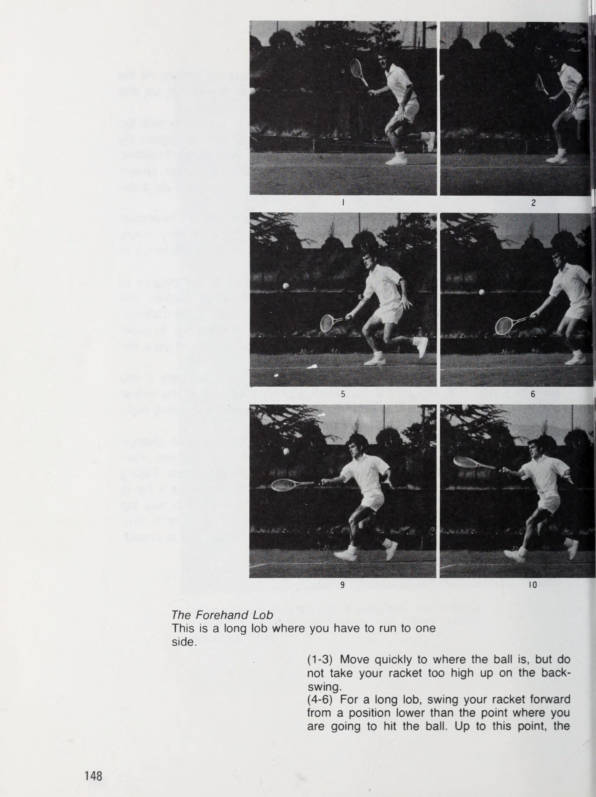
My Lob tôi có hai loại thùy, nhưng tôi không phân biệt những cái đó tôi đặt spin vào và những cái đó tôi do not. Một là thùy thấp đó tôi chơi đột ngột khi đối thủ của tôi có vẻ không lường trước được điều đó. Quả bóng ở độ cao mà đối thủ của tôi có thể hoặc không thể chạm tới được. Tuy nhiên, trong phần lớn các trường hợp, đối thủ của tôi sẽ không giữ thăng bằng tốt và không thể trả bóng cho tôi, ngay cả khi anh ta đuổi theo. Khi nào tôi thực hiện cú đánh này để đối thủ của tôi không nhận ra | am going to
Cú lốp bóng vừa là một cú đánh phòng thủ vừa là một cú tấn công quan trọng. Hình ảnh này cho thấy một cú lốp bóng tấn công khiến Newcombe phải rút lui khỏi lưới.
Khi bạn bị ép bằng một quả bóng sâu, một chiến lược là đánh một cú lốp bóng dài và khôi phục thế đứng của bạn mà không cần nỗ lực quá nhiều. »
đánh một cú lốp bóng, phong cách của tôi hoàn toàn giống với một cú đánh thông thường. Hiện tại tôi sắp đánh bóng, tôi lật mặt vợt của tôi lên và thực hiện một cú lốp bóng. Do đó, đây là cú lốp bóng tấn công của tôi. Tôi chơi lốp bóng khác của tôi khi tôi buộc phải chạy sâu vào trong sân đấu. Đây là một cú lốp bóng cao và sâu. Nó cho tôi đủ thời gian để lấy lại thăng bằng và vị trí trên sân, nếu cú lốp bóng của tôi đi tới đường cuối sân của đối thủ. Đối thủ của tôi buộc phải rút lui và đánh trả bằng một cú đánh hoặc cú đánh qua đầu chậm hơn.
tôi có thể nói cú lốp bóng này đã hoàn toàn thành công trong vai trò một cú đánh phòng thủ. Mặc dù thực tế rằng cả cú vô lê nửa vòng và cú lốp bóng đều là những cú đánh quan trọng trong các trận đấu, nhưng có vẻ như chúng không được luyện tập nhiều. Việc luyện tập thường xuyên là cần thiết để luôn tự tin thực hiện cú lốp bóng chuẩn xác và thực hiện cú vô lê một nửa an toàn. Lúc đầu, hãy đánh những cú lốp bóng thông thường để cảm nhận được mức độ lực và độ chạm cần thiết. Với cú lốp bóng, cũng như các cú đánh khác, hướng đánh rất quan trọng.
Tuy nhiên, sẽ không tốt nếu chỉ đánh bóng lên trên; bạn phải nhắm vào một điểm và có thể đánh nó một cách chính xác. Để nhắm chính xác theo hướng bạn muốn, bạn không được quên động tác theo sau sau khi đánh bóng. Khi bạn muốn đánh một cú lốp bóng thấp, hãy hoàn thành động tác theo dõi của bạn. Nếu bạn muốn chơi một cú lốp bóng cao, bạn phải luôn đặt bề mặt vợt bên dưới quả bóng và đánh nó, nhưng hãy hoàn thành cú vung vợt tiếp theo của bạn lên cao. Đừng bao giờ cố gắng chơi một cú lốp bóng theo kiểu giật giật.
Nhờ luyện tập, nhiều người chơi có khả năng thay đổi cú đánh và góc mặt vợt của họ vào giây phút cuối cùng. Đặc biệt trên mặt sân chậm, anh ta có đủ thời gian để thay đổi các cú đánh của mình. Lấy cú lốp bóng làm ví dụ, anh ta có thể chuẩn bị sẵn sàng để trông như thể sắp đánh một cú đánh thông thường. Đột nhiên anh ta thực hiện một cú lốp bóng có độ xoáy từ trên xuống. Kiểu lốp bóng này, với một cú xoáy từ trên xuống, thường xảy ra trong các trận đấu đôi, có thể cực kỳ hiệu quả khi đối thủ của bạn đang tràn vào lưới.
Cú lốp bóng thuận tay Đây là một cú lốp bóng dài mà bạn phải chạy sang một bên. (1-3) Di chuyển nhanh đến vị trí bóng, nhưng không đưa vợt của bạn lên quá cao trong cú vung vợt sau. (4-6) Đối với một cú lốp bóng dài, hãy vung vợt về phía trước từ vị trí thấp hơn điểm bạn định đánh bóng. Tính đến thời điểm này,
bề mặt của vợt phải vuông góc với mặt đất. (7-9) Nhặt bóng vào đúng tâm vợt của bạn. Bằng cách đó, hãy đánh nó với cảm giác như bạn đang ném nó lên ‘không trung’. Tại thời điểm tiếp bóng, cánh tay của bạn phải duỗi thẳng và mặt vợt không bị võng xuống mặt đất, giống như các cú đánh thông thường. (10-12) Cần thực hiện cú lốp bóng đủ sâu để thực hiện một cú lốp bóng sâu.
Cú lốp bóng trái tay Đây là cú lốp bóng phòng thủ cổ điển, trong đó bạn căng cơ thể hết mức và cố gắng thực hiện cú lốp bóng trả về từ một cú đánh tấn công đã đến ngay mép đường biên. (1-4) Với tư thế duỗi thẳng, đuổi theo bóng và vào vị trí thực hiện cú lốp bóng. (5-8) Duỗi hoàn toàn cánh tay của bạn và đánh bóng. Như trong các cú đánh bình thường, hãy giữ cổ tay của bạn
chắc chắn, nhưng vì bạn đang nhắm đến việc trả bóng dài và sâu về góc trái tay của đối thủ, nên bạn cũng phải tác động một chút lên đầu vợt của mình, như tôi dường như đang làm trong bức ảnh này. (9-12) Theo bóng, và trong khi thực hiện động tác theo hướng lên trên, hãy bắt đầu khôi phục thế đứng cơ bản của bạn.
Kiểm soát cũng cần thiết khi lốp bóng. Ví dụ, đánh một cú lốp dài nhắm vào góc đối phương ở phía bên cạnh và phía sau anh ta là một trong những cú đánh hiệu quả nhất trong quần vợt. Một pha trả bóng khó khăn khi bóng đã đi sâu tới vạch cuối sân. Để có thể trả một cú lốp bóng tốt trong những điều kiện này đòi hỏi phải luyện tập hàng ngày.
Cú lốp bóng tấn công thậm chí còn hiệu quả hơn khi bạn có thể đánh nó từ vị trí nhận bóng bình thường.
Nastase, chạy sang một bên, khiến đối thủ bối rối bằng cách lốp bóng và thực hiện cú xoáy bóng từ trên cao.
Kỹ thuật tốt nhất là cần thiết để thực hiện cú đánh rơi và cú vô lê. tit
Đọc chuyển động của đối thủ Cú đánh rơi đòi hỏi một cú chạm tinh tế. Cú thả bóng không chỉ giúp bạn dễ dàng đạt được điểm mà trong hầu hết các trường hợp, nó còn có hiệu quả trong việc khiến đối thủ của bạn bỏ chạy, khiến họ mệt mỏi. Mặt khác, nếu bạn mắc lỗi về thời điểm sử dụng cú đánh này hoặc nếu nó không đi đúng mục tiêu, đối thủ của bạn sẽ dễ dàng giành được điểm. Tôi không bao giờ đánh rơi trừ khi tôi nghĩ rằng nó sẽ quyết định một điểm.
Tuy nhiên, tôi hãy chuẩn bị sẵn sàng với kỳ vọng rằng đối thủ của tôi sẽ đuổi theo quả bóng và trả lại nó. Điều đó có nghĩa là | tôi đang chờ xem đối thủ của tôi sẽ đánh quả bóng tiếp theo ở đâu. Tất nhiên, nếu cú đánh rơi của tôi không thất bại, tôi phải đảm bảo tôi đưa nó qua mạng. Tuy nhiên, ngay cả khi tôi ít nhất cũng bị mất một điểm tôi sẽ làm tăng tính đa dạng của các chiến thuật được sử dụng, và đối với đối thủ của tôi, anh ta sẽ đề phòng việc tôi thực hiện một cú đánh thả bóng khác và sẽ luôn phải ý thức được khả năng đó.
Trong phần lớn các trường hợp, cú đánh rơi được thực hiện ngay sau khi đưa ra quyết định trong tích tắc. Do đó, đối với bức ảnh này, đòi hỏi sự chạm cực kỳ tinh tế, bạn phải nắm được bí quyết làm thế nào để nắm bắt được cảm giác tinh tế của nó. (1-3) Bước tới gặp bóng ngắn. Vì bạn sắp thực hiện cú đánh rơi, bạn không nên vung vợt về phía sau quá xa. (4-6) Chuẩn bị bề mặt vợt của bạn để đánh-
đánh bóng. Gặp và đánh bóng chỉ bằng một cú chạm nhẹ. Giữ cổ tay chắc chắn nhưng cách cầm nắm tự nhiên. Hành động của cánh tay bạn phải cực kỳ nhẹ nhàng. (7-9) Bề mặt vợt của bạn hơi cong lên khi tiếp xúc. Hãy thử và lấy sức mạnh ra khỏi quả bóng. Đưa nó qua lưới chỉ bằng một cú chạm nhẹ. (10-12) Hầu như không có cú đánh tiếp theo nào ở cú đánh này. Ngay cả chuyển động của cơ thể bạn cũng rất nhẹ vì nó giúp hấp thụ lực từ quả bóng.
Thời điểm là quan trọng tôi chơi những cú đánh rơi của tôi chủ yếu bằng trái tay. Những cái tôi cú đánh cao ngang thắt lưng là chính xác nhất và tôi phân loại chúng thành các cú sút chéo và ngược. Trong khi | tôi đang đánh bóng nhẹ nhàng bằng vợt của mình, | Tôi cũng đang trượt bề mặt vợt của mình dưới quả bóng. Một quả bóng có xoáy xuống đi qua lưới và nảy thấp, khiến đối thủ của tôi khó đánh trả. Chuyển động của vợt rất nhẹ và hầu như không có chuyển động theo hướng nào.
Cách làm không có gì khác biệt tôi đánh thuận tay hoặc trái tay của tôi, nhưng, tùy thuộc vào vị trí tôi đánh một cú thả bóng, kết quả có thể có rất nhiều khác biệt. Sau khi đánh giá lực của quả bóng đến với tôi từ khoảng giữa sân và xem đối thủ của tôi đang ở đâu, tôi sẽ chơi một cú thả bóng. Cú thả bóng là một đòn hiệu quả đối với những đối thủ mạnh khi ở gần đường cuối sân nhưng yếu hơn khi tiến về phía trước. Tôi sẽ khuyên bạn nên thêm cú đánh này với nét tinh tế vào kỹ thuật của mình, nhưng hãy cẩn thận để không mắc sai lầm về thời điểm.
Agena
Thái độ đối với sự nhạy bén trong thực hành & chiến thuật
Thái Độ Luyện Tập Sử Dụng Đầu Khi Luyện Tập Quần vợt là môn thể thao đòi hỏi kỹ thuật rất phức tạp và cần nhiều thời gian cho đến khi bạn thành thạo tất cả các cú đánh. Ngoài việc tiếp thu các kỹ thuật, cần phải có kinh nghiệm về chiến thuật và các khía cạnh cảm xúc khi đấu tranh trong một trận đấu. Khi bạn thực hành các cú đánh khác nhau tôi đã nói, hành động của bạn không bao giờ nên chỉ là đánh một quả bóng. Nếu bạn có thể nghĩ – nếu có thể với mỗi cú đánh – rằng bạn đang chơi một trận đấu thì bạn sẽ tiến bộ nhanh chóng.
Tại Học viện Quần vợt Rosewall ở Nhật Bản, tôi đã thi đấu với nhiều cầu thủ trẻ và cầu thủ đã đại diện cho Nhật Bản tại Davis Cup, và sao | Điều đặc biệt chú ý lúc đó là họ đánh bóng quá vội vàng. Đương nhiên, cần phải đánh bóng thật mạnh, nhưng vì tất cả họ đều đánh mọi quả bóng với lực như nhau nên tỷ lệ trượt bóng của họ rất cao và lối chơi không bao giờ có lợi cho họ. Thay vì đánh mạnh, điều quan trọng nhất trước tiên là tấn công.
hãy hoàn thiện phong cách của bạn và sau đó giảm số lần bạn mắc lỗi. Trong quần vợt, vị trí - tức là nhắm vào một vị trí và đánh bóng chính xác vào vị trí đó - là điều bạn phải tập trung đầu tiên. Bạn phải làm điều này một cách nhất quán, với bất kỳ hình thức hoàn trả nào. Nếu bạn luôn mắc cùng một lỗi, ngay cả khi luyện tập, bạn sẽ không bao giờ thành thạo những cú đánh đó. Kỷ luật bản thân và cơ thể của bạn Những cân nhắc cơ bản trong môn quần vợt của tôi là đạt được cú đánh tự nhiên nhất có thể, không sử dụng cơ thể quá mức, sử dụng nhịp điệu và luôn tập trung vào bóng.
Ngay cả khi luyện tập hàng ngày, nó không chỉ là đánh bóng. Bạn điều chỉnh nhịp điệu của cơ thể và nếu bạn tập luyện với ý tưởng tăng cường sức mạnh cho chân và đùi, bạn sẽ trau dồi các chuyển động của cơ thể và sức mạnh cần thiết cho môn quần vợt. Khi thực hành của bạn. dịch vụ, hãy thử và suy nghĩ cẩn thận về mỗi lần bắn.
Thời gian tập luyện tại Học viện Quần vợt Rosewall. Khi nào tôi khoảng mười sáu tuổi, tôi đã từng đến phòng tập thể hình. Tôi đã làm việc để xây dựng cơ thể của tôi một cách tổng quát. Bây giờ, với tư cách là một người chơi, tôi đã xây dựng được các cơ bắp cần thiết cho môn quần vợt và đủ sức mạnh cơ thể, và tôi không được đào tạo đặc biệt nhiều. Tôi có thể kỷ luật cơ thể đủ bằng cách dốc toàn lực, chạy theo nhiều cú đánh rộng, và bằng cách nhảy lên để thực hiện những cú đánh cao, trả bóng đi qua lưới mềm, và khiến bản thân có khả năng thực hiện tất cả các cú đánh.
Kết quả là không chỉ có tôi ngăn bản thân không bị tụt xuống dưới tiêu chuẩn tôi đã có được qua đào tạo, tôi đã nỗ lực mở rộng các tiêu chuẩn đó hơn nữa. Điều cần thiết đối với tất cả các bạn, khi còn trẻ - đó là thời điểm các bạn đang phát triển nhanh nhất - phải trau dồi sức mạnh thể chất của mình, hoặc những người mới bắt đầu lớn tuổi hơn cần rèn luyện cơ thể cho đúng cách. Tại phòng tập thể dục, câu lạc bộ hoặc trường học thuận tiện, hãy cố gắng xây dựng các cơ bắp cần thiết cho môn quần vợt dưới sự hướng dẫn của huấn luyện viên hoặc người khác có thể tư vấn cho bạn.
Trau dồi sức mạnh sẽ làm nên điều đó
bạn có thể chịu đựng được những trận đấu kéo dài. Ngoài ra, hãy cân nhắc thời gian tập luyện, hãy bắt đầu hình thành những thói quen cần thiết của một người chơi tennis. Ví dụ, khi bạn đang tập luyện dưới cái nóng gay gắt của mùa hè, dù cổ họng có bị khô nhưng bạn cũng nên tránh uống nhiều nước lạnh; thay vào đó hãy súc miệng. Một lần nữa, sau khi thực sự nóng và nhớp nháp, điều quan trọng là bạn phải nhanh chóng thay quần áo hoặc mặc áo len vào để không bị lạnh.
Bạn đã từng thấy người ta bị chuột rút; những điều này đôi khi xảy ra do thiếu sự quan tâm trong các buổi tập luyện. Cách cư xử tốt và trò chơi quần vợt đi cùng nhau Không cần phải nói rằng khi chơi quần vợt, bạn nên tuân thủ các quy tắc, nhưng điều quan trọng không kém là bạn phải có cách cư xử tốt. Khi nào | Nói về 'cách cư xử', điều này có thể chỉ được coi là những hành động bên ngoài, không chỉ là sự biểu hiện ra bên ngoài của chúng là cần thiết, mà Khi nói đến việc rèn luyện, bạn có thể thực hiện nó ở bất cứ đâu.
Kỷ luật cơ thể khi còn trẻ là điều tuyệt đối cần thiết nếu bạn muốn tiến bộ.
Tập dựa vào tường là một hình thức luyện tập hiệu quả cho người mới bắt đầu, đặc biệt là để tăng cường sức mạnh cho cánh tay. Ở đây Rosewall đang trông chừng đứa con trai nhỏ của mình, Glen. bạn phải hiểu chúng và biến chúng thành cách ứng xử tự nhiên của bạn. Những yêu cầu về cách cư xử tốt bao trùm một phạm vi vô cùng rộng lớn và không có điểm nào mà bạn có thể nói rằng mình đã đạt đến giới hạn của cách cư xử tốt. Nhưng rồi, chỉ cần một chút bất cẩn, hoặc cảm xúc khó chịu, những cách cư xử tốt đẹp mà bạn luôn duy trì sẽ biến mất.
Trẻ em trước hết phải học cách cư xử từ việc chăm sóc vợt. Không để vợt mà bạn không sử dụng ở bất kỳ đâu trên sân, không nằm trên mặt đất hoặc nơi vợt tiếp xúc trực tiếp với ánh nắng mặt trời hoặc ẩm ướt; bạn không nên bỏ bê nó theo cách này. Hãy cẩn thận một chút và tập thói quen đặt nó đúng chỗ. Trên thực tế, những cân nhắc cá nhân này có liên quan đến cách cư xử tốt. Quần vợt là môn thể thao đòi hỏi kỹ năng cao nhất, nhưng đồng thời, không có môn thể thao nào khác đòi hỏi phải có sự cạnh tranh tinh thần nhiều như vậy.
Động lực giúp bạn bình tĩnh đi đến cuối một trận đấu kéo dài và mệt mỏi phụ thuộc vào kỷ luật tinh thần có được thông qua quá trình luyện tập thông thường hàng ngày của bạn. Sẽ đúng nếu nói rằng cách cư xử tốt là một phần quan trọng trong việc này.
Đối với một vận động viên quần vợt, cây vợt của anh ta quan trọng đến mức bạn gần như có thể nói nó là một phần mở rộng của cơ thể anh ta. Xử lý nó với sự quan tâm đặc biệt.
Thiết bị, Điều hòa & Giới thiệu về Ken Rosewall
Thiết bị và cách đeo vợt và dây của bạn Trước đây, vợt hầu như luôn được làm bằng gỗ. Điều này thật tuyệt, vì có thể chọn chúng để phù hợp với nhiều sở thích khác nhau, chẳng hạn như một người không linh hoạt trong chuyển động hoặc nặng nề trong chuyển động, cũng như để phù hợp với sự cân bằng và độ bám. Gần đây, với sự đa dạng hơn của các loại vợt được sản xuất, chẳng hạn như kim loại (thép và nhôm), sợi thủy tinh và sự kết hợp của một số vật liệu khác nhau, tình hình đã trở nên khó khăn để quyết định loại vợt nào phù hợp với bạn.
Vợt của bạn là thiết bị có ảnh hưởng quan trọng và trực tiếp nhất đến trận đấu của bạn và không phải là thứ nên được chọn một cách nhẹ nhàng vì thời trang hoặc theo nhu cầu nhất thời. Hãy lựa chọn sau khi suy nghĩ cẩn thận về phong cách chơi quần vợt của bạn. Nói chung, tôi sẽ nói rằng vợt gỗ truyền thống sẽ tốt hơn để chơi. Vợt gỗ tốt hơn có độ ổn định và cung cấp nhiều tính linh hoạt và độ cứng.
Tuy nhiên, khi nói đến vợt kim loại tôi đã gộp chúng lại với nhau bằng cách gọi chúng là kim loại, chúng có cấu trúc khác nhau. Bạn không thể phán xét cho đến khi bạn thực sự đánh một quả bóng với chúng, nhưng có thể phân biệt được những quả rất bất thường. Đối với những cây vợt có cấu trúc khung cực kỳ kém linh hoạt—nghĩa là bản thân vợt không có độ linh hoạt khi bạn đánh bóng—bạn cần phải có một cánh tay khỏe. Tôi thỉnh thoảng cũng thấy có người bị đau cơ cánh tay khi sử dụng vợt kim loại.
Điều này là do cơ của họ yếu so với khung hình, và do đó họ phải trải qua toàn bộ cú sốc khi đánh bóng. Điều này đã ảnh hưởng xấu đến họ. Tuy nhiên, vợt kim loại có ít khả năng cản gió. Vợt khung nhôm tôi sử dụng là một trong những vợt kim loại cứng hơn. Tôi luôn sử dụng vợt cứng, bằng gỗ hoặc kim loại. Nó cũng có một điểm tuyệt vời, và bạn có thể nói rằng nó là một cây vợt tôi thích sử dụng; và quan trọng hơn là phù hợp với phong cách chơi của tôi.
Khi bạn bắt đầu chơi quần vợt lần đầu tiên, hãy nhận lời khuyên từ huấn luyện viên câu lạc bộ của bạn hoặc người khác có kinh nghiệm để bạn có thể chọn cây vợt phù hợp nhất với mình. . Tiếp theo là phần có mối liên hệ quan trọng nhất với chức năng của vợt đó là dây vợt. Gần đây, không chỉ dây tự nhiên mà nhiều loại dây mới làm bằng nylon cũng đang được sử dụng. Vì cả hai đều rẻ tiền và có tính ứng dụng cao nên gần đây chúng đã trở nên phổ biến đối với đa số người chơi thuộc nhóm trung lưu.
Đặc biệt, loại dây này do Nhật sản xuất đang được xuất khẩu đi khắp thế giới. Tôi đã thấy chúng được nhiều người sử dụng. Tuy nhiên, xét cho cùng, cảm giác bạn có được khi đánh bóng bằng dây tự nhiên làm từ ruột tự nhiên khá tuyệt vời. Ngay cả khi bạn đánh bóng theo cùng một cách với cả hai loại, ruột sẽ giúp bạn có độ đàn hồi cao hơn và giúp bóng tiếp xúc và quay nhiều hơn so với nylon. Khi bạn thấy hầu hết các tay vợt hàng đầu đều sử dụng loại ruột này, bạn có thể hiểu được giá trị của sự kết hợp giữa một cây vợt tốt và ruột tốt.
Ngày nay, vợt thường được xâu chuỗi bằng máy. Nếu dây bị kéo quá chặt, điều này sẽ gây khó khăn cho khung và thường gây khó khăn cho cánh tay của bạn. Mặt khác, nếu chúng không đủ chặt, bạn có thể gặp khó khăn hơn trong việc kiểm soát một số cú đánh. Vì những lý do này, bạn sẽ phải định hướng gt Sie ta se ee othe.”eae, MR se on==al i
hãy tự mình điều tra xem độ căng tính bằng pound hoặc kilogam nào phù hợp nhất với bạn. Cả vợt và dây đều cực kỳ nhạy cảm với nhiệt độ và độ ẩm và dễ bị ảnh hưởng bởi chúng. Hãy đối xử với vợt của bạn cực kỳ cẩn thận và luôn cố gắng duy trì nó ở tình trạng tốt nhất. Quần áo tennis và giày tennis Ngay cả quần áo tennis, trước đây phải hoàn toàn màu trắng, gần đây đã trở nên khá sặc sỡ. Giờ đây, việc tìm một cầu thủ mặc đồ trắng ở các giải đấu chuyên nghiệp đã trở nên khó khăn.
Tuy nhiên, giá trị thực tế của quần áo bạn mặc khi chơi quần vợt (nghĩa là liệu chúng có thực sự phù hợp để thi đấu hay không) quan trọng hơn nhiều so với màu sắc và kiểu dáng của chúng. Hãy thử chọn quần áo có chất lượng không bị cứng, cho dù bạn có giặt bao nhiêu lần và không dính vào da khi bạn đổ mồ hôi khi chơi. Điều cần thiết là phải kết hợp áo len, áo vest và trang phục khởi động của bạn với mùa. Nói chung, tôi thích những chiếc rộng rãi một chút, vì chúng giúp tôi hoàn toàn dễ dàng di chuyển.
Tất quần vợt của bạn là một vật dụng quan trọng khác. Để chân không bị mỏi khi chơi lâu, tốt nhất bạn nên mang tất dày. Tôi đi một đôi tất cotton và sau đó là một đôi tất len dày bên ngoài. Nếu làm như vậy, chân bạn sẽ không bị dính, bạn sẽ có một tấm đệm êm ái cho chân và chân bạn sẽ không bị mỏi nữa. Dù bạn đang mặc gì, điều quan trọng nhất cần nhớ là nó phải luôn sạch sẽ không tì vết và bạn nên mặc gọn gàng, để không bao giờ có vẻ như bạn ăn mặc luộm thuộm trước mặt ai.
Về giày quần vợt, ngày nay có rất nhiều loại được sản xuất, bao gồm giày vải, giày da và giày da tổng hợp. Ngoài ra, chúng còn có đủ loại kiểu dáng. Ngay cả những đôi giày màu cũng đã xuất hiện. Từ quan điểm giúp cho trận đấu của bạn trở nên thoải mái, những đôi giày bạn thấy nhẹ và dễ di chuyển nhanh chóng là tốt nhất, nhưng để chơi trong các giải đấu, điều quan trọng là phải chọn những đôi có đế phù hợp với bề mặt sân tennis mà bạn đang chơi.
Nếu bạn mang giày có đế phẳng thường được sử dụng trên sân cứng, bạn sẽ nhận thấy khi thi đấu trên sân đất nện trơn trượt, bạn không thể dừng lại một cách hiệu quả và việc chơi sẽ trở nên khó khăn. Ngoài ra, nếu bạn đi giày có đế mềm và
Những khe sâu dùng cho sân đấu hóa học, nơi dễ dừng lại, bạn sẽ nhanh chóng rơi vào tình thế lao về phía trước mà không hề nhận ra. Nếu bạn quyết định chọn những đôi giày vừa vặn với bàn chân và dễ mang thì bạn sẽ không sợ chúng quá lỏng hoặc bị đau chân. Giày không chỉ là một phần của trang phục chơi tennis mà còn có ảnh hưởng trực tiếp đến cơ thể bạn và vì lý do này, chúng có liên quan đến trận đấu của bạn. Bạn nên chăm sóc đôi giày của mình.
tôi muốn thấy mọi người làm sạch đôi giày bẩn của mình, đặt cây giày vào để tạo hình dáng đẹp và nói chung là chăm sóc chúng. Roscoe Tanner được biết đến là một cầu thủ có phong cách tốt. Rosewall và Tanner vào sân trung tâm ở Wimbledon. Cả hai đều diện trang phục tennis sạch sẽ, gọn gàng.
Thông tin về tác giả Kenneth Robert Rosewall Trong 25 năm, Ken Rosewall là một trong những tay vợt vĩ đại nhất thế giới. Bất cứ nơi nào anh thi đấu, người hâm mộ quần vợt đều dành tình cảm lớn cho anh. Trong quần vợt ngày nay, sức mạnh giúp thắng trận, nhưng trong số các tay vợt, Rosewall có thân hình nhỏ bé, chỉ cao 5'6" (169 cm) và nặng 143 Ibs (65 kg). Bí mật khiến anh trở thành một trong 'Top 10 tay vợt' trong 20 năm qua là độ chính xác của anh—'quần vợt máy tính', nhưng nó cũng đến từ cái có thể gọi là phong cách tuyệt vời mà anh tạo ra bằng chuyển động hoàn toàn tự nhiên của cơ thể.
Ngoài ra, anh ấy còn có thị lực tốt hơn mức trung bình, và điều này, kết hợp với khả năng phản xạ và khả năng đoán trước xuất sắc được trau dồi qua nhiều năm dài là cơ sở cho lối chơi cận thành tuyệt vời của anh ấy và cách anh ấy bao quát sân đấu một cách xuất sắc. Với cơ tay và chân tốt được phát triển nhờ luyện tập từ khi còn nhỏ, anh ấy có sức mạnh cần thiết cho môn quần vợt. Thật dễ hiểu tại sao anh lại được đặt biệt danh là “Cơ bắp”. Cho đến tận bây giờ, ở tuổi 43, anh vẫn giữ được phong độ tuyệt vời đó.
Người ta không nên bỏ qua sự thật rằng đó là sự tiết chế trong cuộc sống riêng tư của anh ấy, vốn tập trung vào quần vợt, đó là lý do khiến anh ấy giữ lại
thứ hạng Cầu thủ số hai thế giới năm 1974. Không có ví dụ rõ ràng nào khác về việc các cầu thủ cố gắng ngủ đủ giấc, tránh các thức ăn kích thích và quan trọng nhất là tránh tâm lý mệt mỏi tột độ. Có lúc có tin đồn rằng anh ấy sẽ giã từ quần vợt chuyên nghiệp, nhưng anh ấy vẫn tiếp tục thi đấu, đánh bại những tay vợt giỏi nhất thế giới. Chúng tôi chắc chắn hy vọng rằng anh ấy sẽ tiếp tục thể hiện 'Rosewall Touch' với người hâm mộ quần vợt trên toàn thế giới trong thời gian tới.
Sinh ra ở Sydney, Australia, vào ngày 2 tháng 11 năm 1934, anh bắt đầu học quần vợt từ cha mình khi mới 7 hoặc 8 tuổi, và đến năm 12 tuổi, anh đã trở thành một tay vợt nổi bật giữa đám đông. Năm 1952, khi mới 17 tuổi, ông cùng với đồng nghiệp, Lew.Hoad, được huấn luyện viên người Úc nổi tiếng thế giới, Harry Hopman, đưa đi du đấu nước ngoài đầu tiên. Trong chuyến du đấu này, anh ấy đã thi đấu xuất sắc tại Wimbledon và ngay lập tức được vinh quang.
Vào năm sau, 1953, ông đã giành được cả hai danh hiệu đơn Úc và Pháp, đồng thời cả trên danh nghĩa lẫn trên thực tế, ông được nhận vào giải đấu của các nhà vô địch. Trong suốt 25 năm thi đấu trên các sân đấu hàng đầu trên toàn thế giới, quần vợt tuyệt vời của anh đã làm rung động người hâm mộ quần vợt khắp nơi. Với vợ Wilma, người cũng gắn bó mật thiết với quần vợt, họ có hai con trai, Brett và Glenn. Là một bộ tứ, họ thích chơi đánh đôi, nên theo mọi nghĩa của từ này, họ là một 'gia đình quần vợt' thực sự. KỶ LỤC CHÍNH * 1950 Đơn—Danh hiệu Thiếu niên Úc * 1952 Đơn—Danh hiệu Thiếu niên Úc, Danh hiệu Thiếu niên Pháp * 1953 Đơn—Danh hiệu Úc, Pháp, Thành viên Đội Davis Cup Đôi—Wimbledon, Danh hiệu Úc, Pháp * Á quân Wimbledon 1954, Thành viên của Giải Wimbledon Đồng đội Davis Cup * Đơn 1955—Danh hiệu Úc, Thành viên Đội tuyển Davis Cup * Đơn 1956—Nhà vô địch Hoa Kỳ, Á quân Wimbledon, Thành viên Đôi Đồng đội Davis Cup—Wimbledon, Hoa Kỳ, Danh hiệu Úc
* 1957 Thành viên của Đội tuyển Davis Cup. Sau khi vô địch Davis Cup, chuyển sang chuyên nghiệp, London Pro Title * 1960 London Pro * 1961 London Pro * 1962 London Pro * 1963 London Pro * 1968 Đơn—Nhà vô địch Pháp, Wembley, Sân cứng Anh (Giải đấu mở rộng đầu tiên) * 1969 Đôi—Danh hiệu Hoa Kỳ * 1970 Đơn—Nhà vô địch Hoa Kỳ, Á quân Wimbledon, Tham gia WCT * 1971 Đơn—Úc, Hoa Kỳ chuyên nghiệp và Nhà vô địch Giải quần vợt Nam Phi Mở rộng Đôi—Chung kết WCT Danh hiệu Nam Phi, được Nữ hoàng Elizabeth II trao tặng giải thưởng MBE cho quần vợt * Đơn 1972—Nhà vô địch Giải Úc Mở rộng Đôi—Chung kết WCT Danh hiệu Úc Mở rộng * 1973 Sau 17 năm, Thành viên của Đội Davis Cup. […] vô địch Mỹ mở rộng. Một lần nữa, khi ông trở thành Nhà vô địch Úc năm 1971, tổng cộng 18 năm đã trôi qua kể từ khi ông giành được danh hiệu này lần đầu tiên vào năm 1953.
Vô địch River Oaks, Cleveland, Charlotte, Osaka Open, Japan Open * 1974 Á quân Wimbledon, Chung kết US Open * 1975 Houston Open * 1976 Xếp hạng ATP, Chung kết Houston, Hong Kong Open * 1977 Xếp hạng ATP, Hong Kong Open. Khi Rosewall lọt vào trận chung kết Wimbledon năm 1970, đó là khoảng cách 16 năm kể từ năm 1954, và 14 năm kể từ lần ông vô địch US Open. Tương tự, khi ông đăng quang Giải Vô địch Úc (Australian Champion) năm 1971, trọn vẹn 18 năm đã trôi qua kể từ danh hiệu đầu tiên của ông vào năm 1953.
Sự nghiệp thi đấu chuyên nghiệp của anh ấy rất rực rỡ. Ông đã giành vị trí chuyên nghiệp hàng đầu từ tay Gonzales vào năm 1960 và giữ vị trí đó cho đến năm 1965. Sau đó vào các năm 1971 và 1972, sau một cuộc đấu tranh khốc liệt sẽ được ghi nhớ từ lâu trong lịch sử quần vợt, ông đã giành chiến thắng trong trận chung kết WCT trước Rod Laver. Đối với Rosewall, việc anh chưa bao giờ là nhà vô địch Wimbledon dù đã 4 lần về nhì là điều phải mô tả như một ‘lời xui xẻo’. Với Gonzales, anh được coi là cầu thủ xuất sắc nhất chưa từng giành chiến thắng ở câu lạc bộ toàn nước Anh.